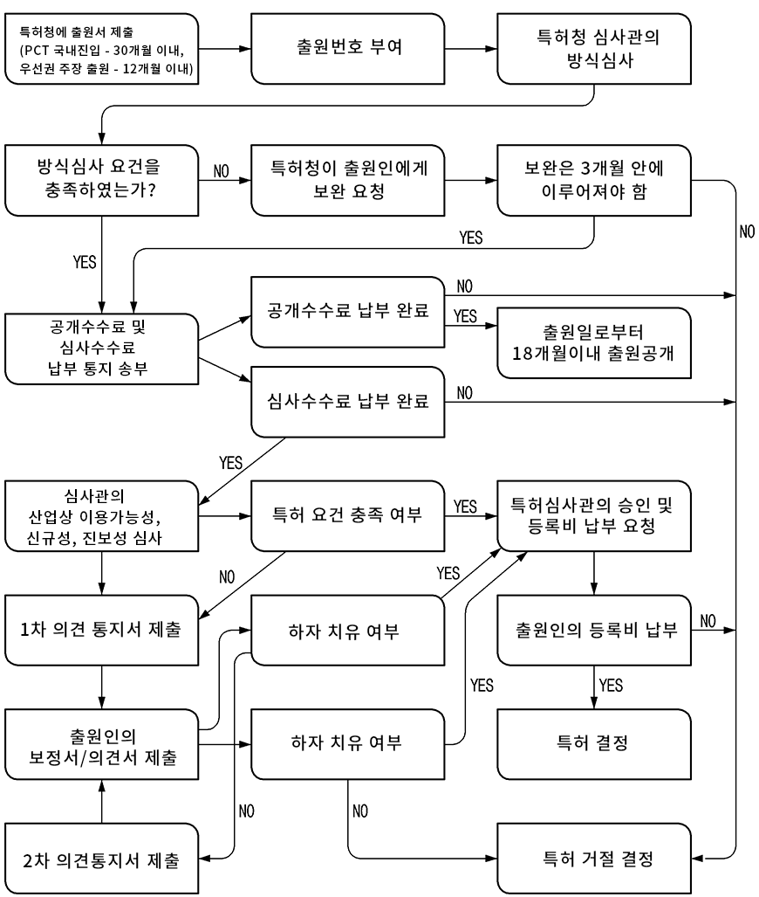
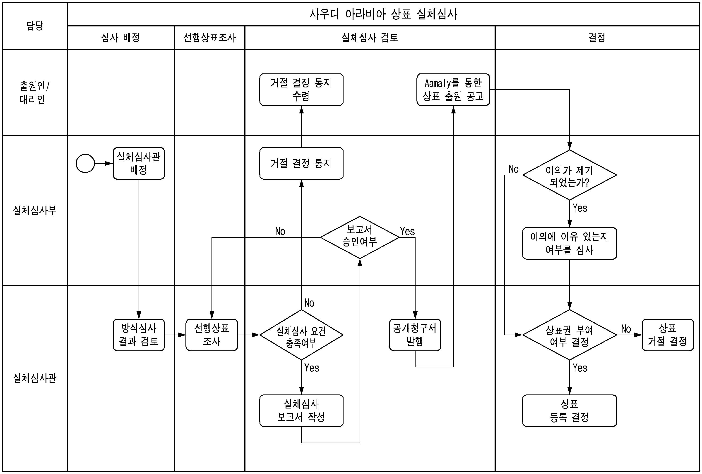
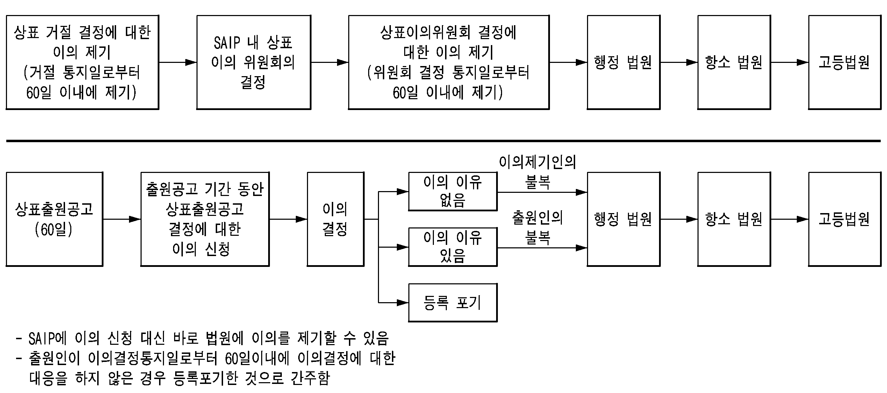

•정부형태 : 입헌군주제(내각이슬람군주정(정교일치의 국왕중심제)
•주요인사
- 국왕 : 살만(The Custodian of the Two Holy(‘15.01.23. 즉위)
- 왕세자 : 모하메드 빈 살만 (Crown Prince Mohammed bin Salman bin Abdulaziz Al Saud), 국방관 겸임(‘15.04.)
•의회구성
- 국정자문회의 : 국왕이 임명권 행사
•중동 유일의 G20 회원국, 아랍의 맹주, GCC 좌장국가
•탈석유/산업다변화를 위한 VISION 2030 사업 적극 추진 중
2. 경제 관련 정보
가. 산업구조
□세계 2위의 원유 생산량('20년 11백만 배럴/일)을 바탕으로 글로벌 원유수급 및 가격을 주도하는 스윙 프로듀서(Swing producer). GDP에서 석유부문이 차지하는 비중은 '20년 23.3%으로 총수출의 73%가 석유 등 광물 자원
ㅇ코로나 회복세로 인한 국제유가 급등과 비석유 부문 수출액 증대로 인하여 IMF는 2021년 사우디 경제성장률을 2.4%로 예측하였으며, 경기회복으로 인하여 2021년 재정수지 적자폭이 감소함 (2021년 재정수입 전년동기대비 84%증가, 재정적자 96% 감소)
ㅇ석유분야 수출 의존도가 높아 국제유가 변동에 취약한 경제구조이며, 대부분의 수출품은 광물성 연료
- 한국은 사우디의 4대 수출국으로 수출비중 약 8.3%를 차지
[표 2] 사우디 아라비아 주요 경제지표
출처 : KOTRA
주요지표
단위
2016
2017
2018
2019
2020
2021*
2022*
인구
백만명
31.8
32.6
33.4
34.1
34.8
35.5
37.4
명목GDP
십억 달러
644.9
688.6
786.5
792.9
662.9
842.5
843.2
1인당 명목GDP
달러
20,288
21,113
23,538
23,266
19,586
23,760
24,827
실질성장률
%
1.67
-0.74
2.43
0.33
-4.10
2.40
4.80
실업률
%
5.6
6
6
5.6
8.5
6.3
-
소비자물가상승률
%
1.21
-1.25
2.16
-0.11
3.58
3.20
2.10
재정수지(GDP대비)
%
-17.2
-9.2
-5.9
-4.4
-7.1
-5.3
-2.7
총수출
백만 달러
183,579
221,835
294,373
261,603
173,854
238,623
-
(수출)
·
15,742
19,590
26,336
20,841
14,980
15,920
-
총수입
·
140,170
134,519
137,065
153,163
131,998
140,944
-
(수입)
·
5,644
5,147
3,952
3,697
3,302
2,134
-
무역수지
백만달러
43,409
87,316
157,308
108,440
35,856
97,679
-
경상수지
·
-23,843
10,464
71,972
46,949
-19,650
환율(연평균)
현지국/US$
3.75
3.75
3.75
3.75
3.75
3.75
3.75
해외직접투자
억 달러
89.4
72.8
229.9
131.9
230.8
178.5
-
외국인직접투자
억 달러
74.5
14.2
42.5
45.6
54.8
67.2
-
나. 비전 2030
□ '16년 4월 발표한 사우디 중장기 경제개발계획으로, 국가경제의 석유 의존도를 낮추고 에너지, 제조업, 관광 등 비석유 분야 산업육성을 추진하는 프로그램. 3개 기가 프로젝트로 NEOM(신도시), Red Sea(관광), Qiddiya(엔터테인먼트) 추진 중
ㅇ 한국은 미국, 중국, 일본, 인도와 함께 Saudi Vision 2030 5대 중점 협력국
ㅇ 에너지 및 제조업, ICT, 인력양성, 보건의료, 중소기업 교역 및 투자확대 등 5개분야 30여개 프로젝트 추진 중
다. 對-韓 무역협정 체결 현황
□ 사우디아라비아를 포함한 GCC(걸프협력회의, Gult Cooperation Council, 사우디 아랍 쿠웨이트 카타르 오만 바레인 6개국 지역 협력기구)와는 무역협정(FTA)에 체결하지 않았으나, 2022년 1월, 한-GCC FTA 협상이 공식적으로 재개됨
ㅇ 2022년 6월부터 9일까지 제5차 한-GCC FTA협상이 사우디아라비아 수도 리야드에서 개최되었으며, 상품, 서비스, 투자, 전자상거래, 원산지, 통관·무역원활화, 정부조달, 위생·식물위생조치(SPS), 무역기술장벽(TBT), 협력·중소기업 등 분야에서 협상이 진행됨
ㅇ 자원 부국인 GCC와의 협력은 코로나19로 촉발된 전세계적인 공급망 위기에서 안정된 공급망 구축이라는 효과를 가젹다줄 전망이며, 최근 GCC 국가들이 제조업 육성 노력을 기울이는 상황에서 한국의 첨단 제조산업 경험을 토대로 의료/보건/스마트팜 등 다양한 미래 산업 분야에서 투자 협력이 기대되고 있음
□ 한국과의 협정 발효 현황 (국교 수립일 : 1962. 10. 16.)
*출처 : KOTRA
협정발효현황
발효일자
발효내용
한-사우디 경제기술협력협정
1975-01-19
한-사우디 문화협정
1975-08-04
한-사우디 항공협정
1984-01-21
감천항 개발차관 협정
1984-01-27
사우디에서의 한국의료단 활동에 관한 협정
1991-02-23
한-사우디 항공운수소득면세협정
1991-07-18
한-사우디 교육교류약정
1997-04-23
한-사우디 투자보장협정
2003-02-19
한-사우디 고등교육 협력 약정
2007-03-24
한-사우디 IT 협력약정
2017-03-24
한-사우디 이중과세 방지협정
2008-12-01
국방협력협정
2014-02-09
한-사우디 관광공예 분야 실행계획서 체결
2013-05-14
한-사우디 창조경제 협력 약정
2015-03-03
한-사우디 사증발급 간소
2019-02-01
사우디 입국시마다 최대 90일 간 체류 가능한 5년 복수 비자 발급 및 비자비용 90달러 수준으로 인하
한-사우디 군사비빌정보보호협정
2018-07-19
한-사우디 원자력협력협정
2012-08-04
한-사우디 지식재산협력파트너십협정
2022-01-17
2년간 5개분야(IP생태계,국가IP전략,특허심사,교육,정보화) 35개 과제 추진 위한 11명 지식재산 전문가 파견
라. 우리기업 진출 현황
□ 지상사 : 18개사 (리야드 기반 14개, 동부/서부 지역 기반 4개사)
□ 건설사 : 28개사 (리야드 기반 13개, 동부지역 기반 15개사)
□ 주사우디아라비아 대한민국 대사관
ㅇ 담당업무 : 주사우디아라비아왕국 대한민국 대사관은 정무, 경제ㆍ통상, 문화 등 제반 분야에서 사우디와 상호 우호협력 관계를 증진하고, 사우디 내 우리나라 홍보 및 재외국민을 보호하는 업무
ㅇ 주소 : Korean Embassy, P.O.Box 94399, Riyadh 11693, Saudi Arabia
ㅇ 전화 : +966-11-488-2211(대표)
□ 주젯다 대한민국 총영사관
ㅇ 담당업무 : 정무, 경제 · 통상, 문화 등 분야에서 우리나라와 사우디 서부 주재지역과의 우호협력 관계를 증진하고, 주재지 내 재외국민을 보호하는 업무를 수행
ㅇ 주소 : Consulate General of the Republic of Korea, P.O.Box 55503 Jeddah 21544 Kingdom of Saudi Arabia
ㅇ 연락처 : +966-12-668-1990
□ KOTRA 리야드 무역관
ㅇ 명칭 : KOTRA Riyadh Commercial Section of the Republic of Korea(대사관 상무부서)
ㅇ 역할 : 시장개척사업, 조사사업, 투자유치사업
ㅇ 주소 : 105 Legend Tower, King Fahad Road, P.O Box 220297, Riyadh 11311, K.S.A
ㅇ 전화 : +966-11-273-4496
□ 수출입 은행 사우디아라비아 주재원
ㅇ 역할 : 2012.11월 리야드 사무소 개설 후, 사우디 금융시장 동향파악, 사우디 진출 우리기업에 대한 금융 지원 등의 업무를 수행하고 있음
ㅇ 주소 : KOTRA, Commercail Section, Embassy of the Republic of Korea 105 Legend Tower, Tahia Street North, King Fahad Road P.O. Box 220297, Riyadh 11311, Kingdom of Saudi Arabia
ㅇ 전화 : 001-966-53-860-9115
ㅇ 사우디아라비아는 미래의 석유고갈에 대비해 현재의 석유 의존 경제구조를 탈피하여 비석유 기반의 경제구조로 바꾸려는 사우디 비전 2030 프로젝트를 진행 중
ㅇ 2030년까지 사우디 경제를 비석유 분야로 다각화 하여 건강, 교육, 인프라, 관광 등과 같은 공공서비스 부분에 대한 경쟁력을 강화하는 것을 골자로 하여 사우디정부는 사우디 경제구조를 변화시킬 핵심 산업 중 하나로 지식재산(IP)를 선정
ㅇ 지식재산 산업을 핵심산업으로 육성하기 위하여 지식재산권 관련 정부 기능 및 조직을 통합한 사우디 지식재산청(Saudi Authority for Intellectual Property; SAIP)을 2018년에 설립함
2) 조직 및 역할
□ 기존 특허청(Saudi Patent Office;SPO, 특허법 관할), 상업투자부(Ministy of Commerce and Investment; MCI, 상표법 관할), 문화정보부(Ministy of Culture and Information; MOCI, 저작권법 등 관할) 등으로 분리되어 있었던 지식재산권 관리 기능을 하나의 기관으로 통한 것이 SAIP로, SAIP는 사우디 아라비아의 유일한 IP 당국임
ㅇ SAIP의 지재권 출원 및 등록 업무는 IP Operation부에서 진행되고 있으며, 특허청, 상표국, 저작권국으로 구성됨
[그림 2] SAIP 조직도
*출처 : SAIP
ㅇ SAIP는 MENA(Middle East and North Africa)지역의 IP허브로 만드는 것을 비전으로 하여 ① 지식재산권 행정 (Administration of IP) ② 지식재산권 서비스 제공 (IP Service Offering) ③ 지식재산권 창출/활용 (Creation & commercialize of IP) 및 ④ 지식재산권 집행 (Enforcement of IP)등의 업무를 담당
- 지식재산에 대한 국가전략 수립 및 채택된 전략의 이행, 그리고 관련 당국과의 협력과 협력을 위한 작업 계획 및 프로그램 개발
- 지식재산 관련 법(저작권법, 특허법, 상표법 등) 및 시행령 개정안 제안
- 지식재산권의 등록 및 등록 문서에 대한 권리 부여 및 집행
- 지식재산권에 대한 정보 제공 및 일반 대중에게 정보 전달
- 지식재산 및 지식재산권의 보호에 대한 인식 제고
- 지식재산권과 관련된 국제 및 지역 기구에서 사우디 정부를 대표하고 사우디 정부의 이익을 보호
- 지식재산권 관련 국제조약에 대한 의견 표현
- 지식재산 관련 국제조약 가입에 따른 의무 이행사항 후속 조치
- SAIP 업무 분야의 지식 기반 구축 및 국내, 지역, 국제 당국과의 정부 교류
- SAIP 업무 분야와 관련된 활동에 대한 사용허락
ㅇ 즉, SAIP는 특허/상표/산업디자인/식물신품종/집적회로/저작권의 등록 및 출원 업무를 담당하고 있으며, 권리 형성 과정에서 SAIP의 결정에 불복이 있는 경우 SAIP에 이의를 제기할 수 있음
ㅇ SAIP는 상표와 저작권 침해 신고를 접수하여 침해행위를 조사할 수 있고, SAIP는 자체적으로 행정처분을 내릴 수도 있음. 또한 일반법원에 공소 절차를 개시할 수 있는 권한을 가지고 있음
ㅇ 이외에도 SAIP은 지식재산 보호 인식을 확대하기 위하여 IP Respect부서를 청장 직속으로 배치하여 지식재산 보호 및 집행 프로그램을 강력하게 추진하고 있음. 지식재산 인식제고 차원에서 2020년 12번의 미디어 캠페인, 38번의 워크숍, 24개 교육 프로그램을 시행하였고, 5천명 이상이 교육에 참가함
ㅇ SAIP 제공 서비스 목록 : https://www.saip.gov.sa/en/services
ㅇ 주소 : : Riyadh 13321, As Sahafah Olaya St 6531, 3059, Saudi Authority for Intellectual Property (Direct Customer Service Number : 92002121)
ㅇ 이메일 : : saip@saip.gov.sa
3) 한-사우디, 지식재산협력 동반 관계(partnership) 협정
ㅇ SAIP는 개청 후 한국 특허청과 IP 전략 수립, 정보시스템 개발, 역량 개발 등의 분야에서 협력을 추진함
ㅇ 2019년에 한국 특허청 공무원 및 민간인을 파견 형식으로 고용하여 심사관 역량 강화 프로그램(사우디 아라비아 심사관 교육) 진행
ㅇ 이후 2022년 사우디아라비아는 한-사우디 특허청장회의에서 ‘강화된 전략적 동반관계(partnership)를 위한 협정서’에 서명하였음
ㅇ 협정서의 내용에 따르면, ① 지식재산 생태계 조성, ② 특허심사, ③ 국가 지식재산 전략, ④ 지식재산 교육(academy), ⑤ 지식재산 정보화 등 5개분야 35개의 과제(project)를 구체적으로 명시하고, 이의 효과적인 이행을 위해 11명의 한국 지식재산 전문가들을 2년 동안 파견하기로 함
나. 사우디 문화정보부 (Ministry of Culture and Information)
□ 사우디아라비아의 저작권 보호 집행을 담당하는 정부 부서는 문화정보부(the Ministry of Culture and Information)임
ㅇ 주로 ① 미술저작물 보호, ② 컴퓨터 프로그램 저작물의 보호, ③ 저작권 관리 및 조사, ④ 국제적인 조직, 교육, 홍보활동 등을 수행함
다. IP 국장
□ 사우디 상무부(The Ministry of Commerce)에 기반을 둔 IP국장(the General Directorate)은 사우디아라비아 국내외의 모든 지식재산권 개발과 활동을 관리 감독함
ㅇ 대표적인 IP 국장의 역할과 권한으로는 왕국 내의 지적재산 창작 지원과 장려, 지적재산권 분야와 관련한 현장 및 기술 연구 수행, 왕국과 WIPO 간 기술 조언과 훈련, 워크숍 등을 포함한 협력 프로그램 수행, 기타 국제기구와의 국제적 기술협력 및 지적재산 관련 세미나 개최 등이 있음
라. 지식재산권 상임위원회(the Standing Committee for Intellectual Property)
□ 사우디아라비아 지식재산권 상임위원회는 사우디아라비아의 WTO 가입과 관련하여 왕국의 지적재산권 시스템을 검토하고 지적재산권 관련 협약을 작성하며, 지적재산권 분야의 발전을 위해 WIPO와의 협력 프로그램을 수행하고지적재산권 침해 방지를 위해 노력함
ㅇ 세계 지적재산권 기구설립 협약 (가입일: 1982년 5월 22일)
ㅇ 문학 및 예술작품 보호를 위한 베른 협약 (가입일: 2004년 3월 11일)
ㅇ 산업재산권 보호를 위한 파리 협약 (가입일: 2004년 3월 11일)
ㅇ 특허권 거래 협정 (Trade-Related Aspects of Intellectual Property Rights; 이하 “TRIPS”) (가입일: 2012년 5월 29일)
ㅇ 특허협력조약 (가입일: 2013년 8월 3일)
ㅇ 특허법 조약 (가입일: 2013년 8월 3일)
ㅇ 비엔나 조약 (가입일 : 2020)
ㅇ 르카르노 조약 (가입일 : 2020)
ㅇ WIPO인터넷 조약인 WCT(저작권 조약)와 WPPT(실연음반조약)에는 아직 가입되어 있지 않으며, 현재 WCT 및 WPPT 가입 준비 중
*출처 : 한국저작권위원회, 특허청, KOTRA, AL TAMIMI & CO
제3절 지식재산권 지원 사업 현황
[표 16] 해외 진출 기업을 위한 IP 지원 사업 리스트
사업분류
사업명
주요내용
세부정보(링크)
비고
1. 지식재산창출
IP기반 해외진출 지원
수출(예정) 중소기업 대상 최대 3년간 IP 서비스(해외권리화 지원 등)를 제공하여 글로벌 강소기업으로 육성
※ 사업분류 1,2,3은 특허청 산하 사업임
※ 위 자료는 2022년 기준으로 작성되었으며, 세부 지원 기준 등 자세한 사항은 각 홈페이지 링크를 통해 확인이 필요함
PARTII 지식재산권
제1절 개요
1. 법률체계 및 지식재산권 관련 법률
가. 사우디아라비아의 법률체계 (Legal System)
1) 샤리아 율법(Shari’ah)
□ 사우디아라비아는 이슬람 국가로서, 통치기본법(Basic Law of Governance)에 따라 Sunnah(선지자 Muhammd의 사상)과 신성한 코란(Holy Qur’an)을 헌법으로 삼고 있으며, 이는 사우디아라비아의 모든 법의 근간이 되는 샤리아(Shari’ah)율법을 구성함
ㅇ 즉, 사우디아라비아의 법원(法源)은 샤리아(Shari’ah) 및 이슬람 규율을 법원으로 하고 있음
2) 국정운영 (Governance)
□ 사우디아라비아는 왕국국가로 선거에 의한 의회나 국가가 구성되어 있지 않으며, 국왕은 사법부, 행정부, 입법부에 대한 초월적 권위를 가지고 있음
ㅇ 국왕은 행정부의 수반으로 수상(Prime Minister)을 겸임하며, 국정운영은 국왕의 자문기구인 슈라 위원회(Shoura Council)와 함께 이루어짐
ㅇ 슈라 위원회는 다양한 분야에서 활약 중인 사우디아라비아 국적의 지도자들로 구성됨
ㅇ 또한 Salman 국왕은 각료회의(Council of ministers)의 구성원이며, 이 각료회의는 사우디아라비아 내 다양한 장관들로 구성됨
ㅇ 사우디아라비아의 각 지역은 주지사(Governor)또는 왕자가 시의회와 협의하여 관할하며, 시의회는 사우디아라비아 정부가 임명한 사람들과 국민투표를 통해 당선된 사람들로 구성됨
3) 사법부(Judiciary)
□ 사법부는 일반법원(Ordinary courts)체계와 행정사법위원회(Boards of Grievance, 행정법원에 상응함)체계가 독립적으로 병존하고 있음
ㅇ 일반법원은 3심 체계로 고등법원, 항소법원, 1심법원으로 구성됨
ㅇ 행정법원도 3심 구조로 최고행정법원(The High Administrative Court), 항소행정법원, 행정법원으로 구성됨
ㅇ SAIP 소속 위원회의 결정에 불복하는 경우 해당 사건에 관한 소를 행정법원에 제기할 수 있음
ㅇ 일반법원은 행정법원의 관할사항을 제외하고 샤리아와 법률에 관한 사항을 관할로 하고 있어, 민사와 형사를 관할하고 있음
□ 사우디아라비아 법원은 개별 사건마다 샤리아 율법을 적용하는 데 있어 상당한 재량권을 보유하고 있으며, 모든 상황을 고려하여 공정한 결과를 도출하기 위해 샤리아 율법에 충실한 판결을 내리고 있음
ㅇ 또한 사우디 아라비아 사법부는 통치기본법과 사법부 관할법에 따라 사법권의 독립을 법적으로 보장받음
3) 계약체결 (Contraction)
□ 사우디아라비아 내 계약체결 및 집행은 샤리아 율법을 따르며, 사우디아라비아 내에서 통용되는 샤리아 율법을 위반하지 않는 선에서 당사자는 계약을 자유롭게 체결할 수 있음
ㅇ 특히, 사우디아라비아 법원이 관할권을 가질 경우 외국법을 준거법으로 정한 조항의 효력을 부인할 가능성이 높기 때문에 계약 당사자는 계약내용이 사우디아라비아 법과 샤리아 율법을 준수하는지 여부를 반드시 확인해야함
ㅇ 예를 들어 채무에 대한 이자 지급 등은 이슬람에서 금지하는 행위로, 이와 같은 계약 내용은 사우디아라비아에서 집행할 수 없음
나. 지식재산권 관련 법률
□ 사우디아라비아의 지식재산권과 관련된 법률은 상표법, 특허법, 저작권법 등이 있으며 별도의 실용신안 제도가 존재하지 않음
□ (특허법) 사우디아라비아 특허법은 1989년 제정되어, 2004년 7월 17일 신특허법 Royal Decree No. M/27이 제정되면서 개정됨
ㅇ 이는 사우디 아라비아 국내법 아래 산업재산권 보호를 위한 파리협정을 시행하는 특허법임
ㅇ 신특허법은 WTO/TRIPS 협정의 규정에 적합하며, 산업디자인, 반도체배치설계, 식물신품종에 관한 특허사항을 포함함
ㅇ 2004. 12. 26. 에는 신특허법에 따른 특허법 시행령(Ministerial Decision No.118828/M/10)이 제정됨
ㅇ 아울러 GCC에 속한 사우디아라비아는 2001년부터 GCC발명특허 규정도 적용받고 있음
□ (디자인법) 사우디아라비아에 있어서 디자인법은 특허법의 일부로서 규정되어 있고, ‘공업디자인’이 보호대상으로 되어 있음
□ (상표법) 2016년 사우디아라비아의 기존의 상표법(Trademarks Law, 2002년 제정)은 2014년 제정된 GCC상표권법(GCC Trademarks Law)으로 대체됨
· 사우디아라비아는 성문법 외에도 샤리아법과 이슬람 규율을 법원으로 삼고 있어, 이에 위반되는 지재권은 등록을 받을 수 없음
· 특히 알콜음료, 돼지고기, 크리스마스트리 장식에 관한 상표는 등록을 받을 수 없음
· 사우디아라비아는 왕국국가로 선거에 의한 국회나 행정부가 구성되지 않으며, 국왕이 사법부/행정부/입법부에 대한 권위를 모두 가지고 있음
· GCC특허법의 개정으로, GCC특허청에서 사우디아라비아의 신규 특허 출원은 더이상 불가함
· 빠른 특허심사를 받기 위해서는 우선심사제도(FTE), 한국-사우디 공동심사제도(CSP), 특허하이웨이제도(PPH)를 활용할 수 있음
· 특허권의 효력기간은 20년이나, 식물신품종의 경우 25년동안 효력이 존속함
· 사우디아라비아에서의 특허에 대한 신규성 상실 예외기간은 12개월임(단, 파리조약에 가입한 국가에서 인정된 국제전시회에서 공개된 경우에만 주장가능함. 타인에 의해 공개된 경우에는 6개월임)
· 사우디아라비아 지식재산권 출원 공식 언어는 아랍어이나, 명세서/청구항/도면/요약서는 영어번역문을 첨부하여 제출하여야함
· 디자인에 대하여 사우디아라비아는 실체심사를 수행하지 않으며 방식심사만 이루어짐
· 사우디아라비아에서 지재권 침해로 인한 손해배상청구의 소에서 입증책임이 모두 원고에게 있으며, 배상액도 일반적으로 적은 경향임
· 세관에서 지재권 보호를 받기 위해서는 미리 사우디아라비아 세관과 양해각서를 체결한 사우디 현지 대리인을 통해 세관 IP 기록을 신청할 수 있음
· 샤리아법에서 고리대금 판매가 금지되고 있으므로, 상대방에게 이자를 지급하도록 강요하는 외국의 판결을 집행하지 않음
제2절 주요 지식재산권별 비교표
1. 지식재산권 제도
[표 17] 한-사우디 지재권 제도 비교
구분
한국
사우디
특허관청
특허청(KIPO, Korea Intellectual Property Office)
사우디아라비아 지식재산청(SAIP, Saudi Authority for Intellectual Property)
지식재산 법체계
· 특허법, 실용신안법, 디자인보호법, 상표법이 개별로 제정됨
· 특허, 직접회로 배치설계, 식물신품종, 산업디자인이 하나의 법률로 제정됨 (별도 실용신안 제도는 없음)
· 사우디는 걸프 협력회의(GCC)국가로, GCC 특허법 및 GCC 상표법 적용을 받음
· 샤리아법이 우선 적용됨
2. 특허
[표 18] 한-사우디 특허 제도 비교
구분
사우디
한국
최근 특허법 시행일
Royal Decree No. M/ 27 dated on 29/5/1425 AH, and amended by Cabinet Resolution No. 536 and
dated on 10/19/1439 AH
(2018년 개정 법률)
2022. 10. 18. 시행 법률 제19007호
외국제도와의 관계
· 한국과 특허공동심사(CSP) 실시 중
· 중국· 유럽·일본· 미국과 특허심사하이웨이(PPH) 실시중
· GCC 특허제도 적용을 받음
· IP특허심사하이웨이, 글로벌 특허심사하이웨이 등을 통해 상대국의 심사결과를 참고하는 ‘특허심사하이웨이(PPH)’제도 실시 중
출원언어
아랍어 (명세서, 청구항, 도면, 요약서에 대한 영어 번역문 제출 필요)
한국어, 영어(한국어 번역문 제출 필요)
특허권 존속기간 및 기산일
출원일로부터 20년 (수목에 관한 특허(식물신품종)는 출원일로부터 25년)
설정등록한 날부터 발생하여 출원일부터 20년
공지예외주장기간
발명이 공개된 날로부터 12개월 (파리조약에 가입한 국가 중 한 개의 국가에서 인정된 국제전시회에서 공개된 경우 예외 주장 가능)
발명이 공개된 날로부터 12개월
실체심사유무
있음
있음
심사청구 제도의 유무
없음
있음
(출원일로부터 3년 이내)
우선심사 제도의 유무
있음
있음
이의신청제도의 유무
있음
있음
무효심판제도의 유무
있음
있음
3. 디자인
[표 19] 한-사우디 디자인 제도 비교s
구분
사우디
한국
최신 디자인 보호법 시행일
Royal Decree No. M/ 27 dated on 29/5/1425 AH, and amended by Cabinet Resolution No. 536 and
dated on 10/19/1439 AH
(2018년 개정 법률)
2022. 10. 8. 시행 법률 제18998호
출원언어
아랍어
한국어
디자인권의 존속기간 및 기산일
출원일로부터 10년
설정등록한 날부터 발생하여 출원일부터 20년
신규성상실의 예외
디자인이 공개된 날로부터 6개월 (파리조약에 가입한 국가 중 한 개의 국가에서 인정된 국제전시회에서 공개된 경우에 한함)
디자인이 공개된 날로부터 12개월 (다만, 디자인등록을 받을 수 있는 권리를 가진 자가 공개한 경우에 한함)
실체심사 유무
없음
있음
심사청구제도
없음
없음
우선심사제도
없음
있음
출원공개제도
없음
있음 (단, 출원인의 신청이 있는 경우에 한함)
비밀디자인제도
없음
있음
이의신청제도
있음
있음 (단, 디자인일부심사등록출원에 따라 등록된 경우에 한함)
무효심판제도
있음
있음
4. 상표
[표 20] 한-사우디 상표 제도 비교
구분
사우디
한국
최신 상표법 시행일
GCC Trademarks Law (2016년 발효)
2022. 10. 18. 시행 법률 제18999호
표장의 종류
시각에 인지되며, 식별 가능한 형상, 서명, 말, 문자, 숫자, 그림, 상징, 표시, 서명, 또는 그 조합 (음향상표, 단체상표, 가족의 성 포함)
제한 없음
출원인 자격
· 사우디 국적의 자연인 법인
· 사우디에 거주하며 상업 활동을 하려는
· 사우디 아라비아와 상호주의 관계에 있는 국가의 국민
- 2021년 한 해 동안 총 3,979의 특허가 출원되었으며 이는 2020년에 대비 11.5%증가율을 보임
- 기관(institution)출원이 79%로 대부분을 차지함
- 또한 2021 SAIP 통계 리포트에 따르면, 2021년 PCT 조약을 통해 SAIP가 출원한 특허 건수는 2,876건으로 2021년 출원건수의 72%를 차지함
[그림 5] 기관별 2021년 특허 출원건수
*출처 : SAIP
- 아람코(Aramco, Saudi Arabian Oil Company)가 476건 출원하여 최다출원자임
- 아람코는 PCT 출원 최대 출원자이기도 함 (2018년 321건, 2019년 439건, 2020년 435건 출원)
□ 특허관련 발명은 반드시 새로운 것(신규성)이어야 하며, 독창적인 공정(진보성)과 산업에 적용할 수 있는 것(산업상 이용가능성)이어야 함 (Law of Patents, Layout Designs of Integrated Circuits, Plant Varieties, and Industrial Designs Article 43, 특허법 제43조)
ㅇ 신규성(novelty) : 발명이 선행기술에 의해 예상되지 않아야 신규성을 충족할 수 있음. 선행기술은 서면 또는 구두 공개, 사용 또는 기타 방법으로 특허의 출원 이전, 국내·외 불문 언제 어디서나 대중에게 공개되는 기술을 의미함 (특허법 제44조(a))
ㅇ 진보성(inventive step) : 특허출원기술이 당해기술분야에서 통상의 기술을 가진 자에게 명백하지 않은 경우, 진보성을 갖고 있는 것으로 간주됨 (특허법 제44조(b))
ㅇ 산업상 이용가능성(industially applicable) : 모든 유형의 산업 또는 농업에서 제조 또는 사용될 수 있는 경우 산업상 이용가능한 것으로 간주됨 (특허법 제44조(c))
- 또한 사우디아라비아에서는 수공예, 어업 및 서비스업을 포함하는 모든 종류의 산업, 또는 농업에 있어서 제조 또는 사용할 수 있는 경우에도 산업상 이용가능하다고 간주하고 있음
나. 신규성 상실의 예외
□ 아래와 같은 경우 신규성을 상실하지 않음 (IMPLEMENTING REGULATIONS OF THE LAW ON PATENTS, LAYOUT-DESIGNS OF INTEGRATED CIRCUITS, PLANT VARIETIES, AND INDUSTRIAL DESIGNS Article (31), 특허시행규칙 제31조)
ㅇ 사우디아라비아에서 특허 출원 6개월 전, 또는 우선일로부터 신청자 또는 그 외에 정당한 권리를 행사할 수 있는 자가 아닌 타인에 의해 공개된 경우
ㅇ 출원일 또는 우선일로부터 12개월 이내, 파리조약에 가입한 국가 중 한 개의 국가에서 인정된 국제전시회에서 공개된 경우
다. 우선권 주장
□ 사우디아라비아는 파리조약, GCC협력조약, PCT조약(2013)에 가입했으므로 다음과 같은 경우 우선권을 주장할 수 있음
ㅇ 파리루트를 이용하여 사우디아라비아에 출원하는 경우
ㅇ 파리루트를 이용하여 GCC에 출원하는 경우
ㅇ PCT출원을 하고 사우디아라비아를 지정하는 경우
ㅇ GCC 특허청에 특허가 등록된 경우 사우디아라비아뿐만 아니라 GCC가맹 ６개국 모두에서 특허권의 효력이 미침
ㅇ PCT출원의 국내단계 이행은 우선일로부터 30개월이내에 이루어져야함
라. 불특허 사유 (특허법 제45조)
□ 아래에 해당하는 발명은 사우디아라비아에서 특허등록이 불가능함
ㅇ 발견(Discoveries), 과학이론 및 수학적인 방법에 따른 이론상의 발명
ㅇ 상업적 활동, 순수한 정신적 활동, 게임을 위한 계획, 규칙 및 방법
ㅇ 식물품종 또는 동물품종의 생산에 사용되는 생물학적 공정 (단, 미생물 공정에 의해 얻어지는 물질은 제외함)
ㅇ 인체 또는 동물의 신체에 대한 수술적 또는 치료적 방법, 진단방법(단, 치료 및 진단에 사용되는 제품은 제외함)
ㅇ 이슬람 율법과 공공질서에 반한다고 여겨지는 발명
마. 실용신안
□ 사우디아라비아에서는 별도의 실용신안 제도가 존재하지 않음
제2절 출원 및 심사절차
1. 특허 출원 절차
가. 사우디아라비아 출원시 필요서류
① 발명특허 출원서
- 발명특허 출원서에 다음과 같은 항목을 기재해야함
✓ 발명의 명칭
✓ 출원인 성명, 주소, 거주지, 직업
✓ 발명자 성명, 주소
✓ 대리인 성명, 주소
✓ 출원에 대한 우선권주장의 여부
- 출원에서는 발명에 대한 설명서를 포함해야함 (설명서는 발명의 요약, 상세한 설명, 보호요소, 도면을 포함)
- 출원서는 기본적으로 아랍어로 작성해야하며, 전문 용어를 기재하는 경우 아랍어 동의어가 있는 경우 아랍어 동의어만 기재하여도 되며, 외국어로 된 약칭이 있는 경우 차후에 명시하는 때에는 약칭만 기재해도 됨
- 물리기호, 단위, 명칭 등의 과학 용어는 국제 순수 및 응용물리학연생(IUPAP)에서 지정한 용어를 사용해야 함
- 출원인은 그 밖에 발명에 관한 특정기관의 검사보고서와 연구보고서 등의 관련 서류도 제출할 수 있음
② 식물신품종(Plant Patent) 출원서
- 식물신품종 출원서에 다음과 같은 항목을 기재해야함
✓ 식물품종의 명칭
✓ 출원인의 성명
✓ 품종 육성자의 성명
✓ 대리인의 성명
✓ 첨부서류
✓ 우선권과 공개에 관한 정보
- 출원서에는 식물품종에 대한 기술적 설명서와 그 밖의 첨부서류를 포함하며, 품종에 대한 기술 설명서는 원본 1부와 사본 2부를 제출해야함
- 한 출원 당 한 개의 품종보호에 한하여 출원이 가능함
□ 특허청에 발송하는 모든 서신은 “공공 특허청장 앞”으로 발성하여야 하며, 출원인은 출원서를 서면으로 작성하여 발송하는 경우 직접 특허청을 방문하지 않아도 되며, 출원서에 첩부하여 제출한 서류는 반환되지 않음
ㅇ 특허청이 출원을 거절하거나, 출원인이 출원을 취하하거나 그 밖의 다른 사유로 출원서의 효력이 소멸된 경우 특허청은 출원서를 효력이 소멸된 날로부터 5년 동안 보관함
나. 사우디아라비아 출원 언어
□ 사우디아라비아 특허 출원의 공식 언어는 아랍어임
ㅇ 다만, 명세서, 청구항, 도면 및 요약서에 대한 영어 번역문을 첨부하여 제출해야함
다. 우선권 주장 서류
□ 우선권 문서의 인증 사본은 특허 출원을 한 날로부터 90일 이내에 제출해야함
라. 위임장 요구 사항
□ 출원서 제출 시 공증된 위임장을 제출해야 함
마. 변리사 대리
□ 외국인은 등록된 사우디아라비아 특허 대리인 또는 변호인을 통해 사우디아라비아에서 특허출원을 진행해야 함
ㅇ 또한, 사우디아라비아 영사관에 합법적인 공증을 받은 위임장 원본을 사우디아라비아에서 특허 출원을 한 날로부터 90일 이내에 제출해야함
바. PCT 출원
□ 사우디아라비아를 지정국으로 하여 우선일로부터 30개월 이내에, 국내단계 출원을 사우디아라비아에 할 수 있음
사. GCC 특허
□ 사우디아라비아는 걸프만 지역 협력체(GCC) 가맹국으로서, 기존에는 GCC 특허법에 의해 설치된 GCC특허청을 통해 특허출원이 가능했었음
ㅇ GCC 특허법이 최근 개정됨에 따라 GCC 특허청은 2021년 1월 5일 신규 특허출원의 접수를 중단하였고 GCC 개별 회원국에서 특허 출원·심사·등록을 수행함 (단, GCC 개별 회원국 특허청의 요청이 있는 경우에만 GCC 특허청에서 특허 출원을 접수하고 심사를 할 수 있음)
ㅇ GCC 특허청에서 현재 심사 계류중인 특허에 대해서는 출원된 당시의 법률에 따라 집행하며, 개정 사항은 소급하여 적용되지 않음
아. 출원변경 및 취하
□ 출원인이 직접 또는 특허청의 요청에 따라 서류를 제출하거나 어떠한 사항을 추가로 기재하는 경우 지정수수료를 납부하여야 하며, 출원인은 출원에 대한 최종결정이 공표되지 아니한 경우 자신의 출원을 취하할 수 있음
자. 분할출원
□ 분할출원은 특허권 부여 결정전까지 가능함（특허법 제46조)
ㅇ 다만, 출원의 변경은 제도가 없어 불가능함
*출처 : 특허청, KOTRA, HARENZO
2. 특허 심사절차
가. 특허 심사기관
□ 특허 심사와 등록은 SAIP IP Operations에서 담당하고 있음
ㅇ 사우디아라비아에서의 특허 등록 절차를 개관하면 아래와 같음

[그림 7] 사우디아라비아 특허 출원부터 등록까지 절차 개관
*출처 : KADASA IP
나. 방식심사
□ 각 출원서에 대하여는 출원서가 필요요건에 부합하는지를 확인하기 위하여 형식 심사를 진행함
ㅇ 심사는 출원서의 형식에 대한 심사와 요지에 대한 심사로 나눌 수 있으며, 형식에 대한 심사를 통하여 출원서가 일부 조건을 갖추지 아니한 사실이 드러난 경우 출원인에게 이를 통지하고 최대 90일 이내에 시정을 명하며, 시정되지 아니한 경우 그 출원은 취하된 것으로 봄
s
[그림 8] 사우디아라비아 특허 방식 심사 절차 개관
*출처 : 특허청
다. 실체심사
□ 특허청은 출원서에 대한 심사 필요 비용을 정하고, 출원인에게 3개월 이내에 비용의 납부를 명하며, 출원인이 비용을 납부하지 아니한 경우 출원을 말소하고, 이 사실을 등록원부에 등록함
ㅇ 출원인이 이 비용을 납부한 경우에는 출원서의 요지에 대한 실체심사를 진행함
□ 특허청은 출원서의 심사를 진행하는데 있어 다른 특허청에서 작성한 조사보고서와 심사보고서 등을 참고할 수 있으며, 심사기간 중 특허대상에 대한 침해행위가 발생하였거나 빠른 시일 내에 발생할 가능성이 있는 경우 출원인의 요청에 따라 심사를 신속히 처리할 수 있음
□ 특허청은 출원인에게 1차 심사결과보고서를 통지하고, 출원인은 결과에 따른 수정사항을 수정한 후 특허청에 수정한 출원서를 제출하며, 심사결과보고서의 내용에 동의할 수 없는 경우 자신의 주장에 대한 타당한 이유를 제시하여야 함
ㅇ 특허청은 출원인이 제시한 수정본 또는 타당한 이유를 수락하는 경우 특허심사절차를 완료하고, 그러하지 아니한 경우 2차 심사보고서를 통지하며, 1차와 동일하게 출원인이 수정사항을 이행하여 특허청에 제출하거나, 2차 보고서 내용에 동의하지 아니하는 경우 이에 대한 타당한 이유를 제시함
ㅇ 특허청은 이후 출원인의 수정본 또는 타당한 이유를 수락하는 경우 특허심사절차를 완료하고, 그러하지 아니하는 경우에는 출원거절결정을 공표함
□ 출원인은 특허청에서 발송한 통지서를 받은 날부터 3개월 이내에 이에 대한 답변서를 제출하여야하며, 이 기간은 1개월 연장이 가능함
ㅇ 이 기간 중 답변서를 제출하지 아니하는 경우 출원을 거절함
□ 출원서의 요지에 대한 심사를 진행하는 경우 다음의 단계를 거쳐 진행함
∙ 발명의 청구항과 설명, 도면에 대한 검토
∙ 국제특허분류에 따른 출원대상의 분류
∙ 데이터 또는 자료를 통한 첨부서류에 대한 심사
∙ 발명의 신규성에 대한 평가
∙ 발명의 진보성에 대한 평가
∙ 발명의 산업적 이용 가능성에 대한 평가
□ 식물신품종출원의 경우 다음의 단계를 거쳐 심사를 진행하도록 함
∙ 출원한 품종이 지정한 식물품종분류군에 속하는 지의 여부에 대한 확인
∙ 신품종인지 여부에 대한 확인
∙ 품종에 대한 기술심사
□ 출원변경 및 취하
ㅇ 출원인이 직접 또는 특허청의 요청에 따라 서류를 제출하거나 어떠한 사항을 추가로 기재하는 경우 지정수수료를 납부해야 하며, 출원인은 출원에 대한 최종결정이 공표되지 아니한 경우 자신의 출원을 취하할 수 있음
[그림 9] 사우디아라비아 특허 실체 심사 절차 개관
*출처 : 특허청
라. 우선심사(FTE)
□ 2020년 SAIP는 우선 심사 프로그램을 통해 특정 기술 및 대상 제품에 대한 특허 심사 프로세스를 가속화하는 것을 목표로 하는 국가 출원 프로그램인 FTE의 출시함
ㅇ SAIP는 사우디아라비아 2030 비전에서 목표로 하는 기술 분야를 FTE 대상 기술 분야로 선정함 (친환경 기술, 만성 질환의 진단 및 치료 제품, 전염병 퇴치에 기여하는 기술 등)
□ 한-사우디 특허심사하이웨이(Patent Prosecution Highway, PPH) 시범실시 프로그램은 2019년 7월 1일부터 3년동안 시행되며, 한국특허청과 사우디특허청은 한-사우디 PPH 시범실시가 프로그램 평가 후 전면시행 여부 및 구체적 시행 방안을 결정할 예정
□ PPH 시행 목적
ㅇ 출원인: 시행국에 공통으로 특허를 출원한 출원인이 상대국에서 우선심사 또는 조기심사를 받아 신속하고 효율적으로 특허권을 취득하도록 함
ㅇ 특허청: 주요국 특허청과의 심사협력을 강화하여, 상대국 특허청이 이미 심사한 결과를 참고하여 심사부담을 경감하고 심사품질을 향상하도록 함 (심사는 독자적으로 진행)
□ 신청요건
ㅇ 특허출원이 상대국 특허출원을 우선권 주장의 기초로 한 것 (PCT 출원의 국내단계진입출원 포함)
ㅇ 상대국 특허출원의 특허청구범위에는 상대국 특허청 심사관이 특허가능하다는 판단을 내린 청구항이 한개 이상 존재할 것
ㅇ 특허출원의 모든 청구항은 상대국 특허청에서 특허가능하다고 판단된 청구항과 동일하거나 청구범위를 감축할 것
ㅇ 자세한 사항 참조 : https://www.kipo.go.kr/upload/sil_kuk/korea_saudi_pph_kr.pdf
□ 제출 서류
① 「상대국 특허청이 특허가능하다고 판단한 청구항의 사본」 및 「그 번역문」
→ 사우디특허청이 특허가능하다고 판단한 청구항의 사본은 ⅰ) 사우디 특허출원이 보정 없이 특허가능하다고 판단을 받은 경우, 특허 출원시의 청구항 사본, ⅱ) 사우디 특허출원이 보정에 의해 특허가능하다는 판단을 받은 경우, 청구항의 보정 사본, ⅲ) 특허가 등록된 경우 특허공보의 사본
②「상대국 특허청이 발부한 심사관련통지서」 및 「그 번역문」
③ 상기 심사관련통지서에 인용된 선행기술
④ 한국 특허출원과 상대국 특허출원의 청구항 대응관계설명표
※ 중요사항: 신청 요건에 관한 세부사항(대상출원, 신청서 서식, 제출 서류의 종류, '제출서류 ①, ②, ③'의 제출 생략 조건, 심사절차 등)은 아래 각국별 이용신청 안내문을 반드시 확인해야함
※ 한국특허청 안내문 : https://www.kipo.go.kr/upload/sil_kuk/korea_saudi_pph_kr.pdf
※ 사우디특허청 안내문 : https://www.saip.gov.sa/en/services/304)
[그림 11] PPH 개요
*출처 : 특허청
*출처 : 특허청, SAIP, Baianat-IP, 한경산업
3. 이의/심판 절차
□ 사우디아라비아 특허청(SAIP)에서 등록이 결정된 특허가 등록공고 되면, 공고일로부터 90일 이내에 이해관계인은 이의신청을 제기할 수 있음
ㅇ 이의 결정에 대해 불복하는 경우에는 결정 통지일부터 60일 이내에 불복심사 위원회에 불복할 수 있음
ㅇ 이의신청에 대한 특허분쟁 위원회의 결정에 대해, 사우디아라비아 행정법원에 항소할 수 있으며, 행정법원의 결정은 항소법원에 항소할 수 있음. 항소를 위한 별도의 조건은 없음
ㅇ 행정법원의 항소절차는 1-2년 정도 소요되며, 항소법원의 절차는 1년 미만으로 결과가 나옴
ㅇ SAIP 본부 방문 (Attend to the SAIP Headquarters)
ㅇ 위원회 사무국은 원고가 제기한 소송을 접수하여 심사하고, 소송 등록에 필요한 서류 및 서류가 완비되었는지 확인한 후 신청서를 심사 (General secretariat of committees receives and examines the lawsuit filed by the plaintiff, verifies that the documents and instruments necessary for registering the lawsuit are complete, and then examines the application)
ㅇ 특허분쟁위원회에 소송 제기 (Present the lawsuit to the Patent Settlement Committee for settlement)
ㅇ 위원회의 사무국을 통해 위원회에서 발표한 결정을 관련자에게 통보 (Inform the persons concerned, through the general secretariat of the committees, of the decision issued by the committee)
ㅇ 60일 경과 후 항소기간이 도과하면 위원회 결정이 확정됨 (Verify that the decision has acquired finality after the lapse of the legal period (60 days) to appeal the decision.)
ㅇ 위원회의 결정에 불복하여 상고하는 경우 의뢰인은 법정상고기간이 종료된 후 관할법원에 소송제기할 수 있음 (In the event of appealing against the committee’s decision, the client can head for the competent court after the end of the statutory period of appeal)
*출처 : 특허청, KOTRA
제3절 등록 및 활용
1. 등록 및 유지
□ 사우디아라비아 특허청에서 특허 출원서에 대한 심사절차를 완료한 후, 특허증이 발급됨
ㅇ 특허증은 지정수수료 납부 후 공보나 간행물을 통하여 공지함
□ 등록료(Grant fee)는 관청에서 고시한 날부터 90일 이내에 공개료(Publication fee)와 함께 납부하여야 함
ㅇ 연차료(Annual fee)는 출원일의 다음 해부터 납부해야 하며 매년 1월 1일부터 3월 31일까지 납부해야 함
ㅇ 연체료는 납기일로부터 3개월 이내에 추가요금 없이 가능하며, 추가 유예기간은 2배의 요금으로 납부하는 경우 가능함
2. 효력 및 활용
가. 특허권의 효력
□ 특허권은 설정등록시 효력이 발생하여 그 존속기간은 출원일로부터 20년이나, 식물신품종 중 수목(trees and vine)에 관한 특허는 출원일로부터 25년임 (특허법 제19조)
ㅇ 2021년 GM Global Technology Operation LLC가 총 40건을 출원하여, 2021년 기관 출원인 중 최다출원인을 차지함
[그림 15] 2021년 디자인 출원인의 국적
*출처 : SAIP
ㅇ 디자인 국적별 출원인 현황을 살펴봤을 때, 사우디 아라비아 국적인이 가장 많은 출원을 하였으며(853건, 61%), 미국, 일본 순으로 사우디 아라비아에 디자인을 출원함
2. 주요제도
가. 개요
□ 사우디아라비아의 디자인법은 특허법의 일부로서 규정되어 있어 ‘공업디자인(Industrial Design)’이 보호대상으로 되어 있음
ㅇ 공업디자인 : ‘2차원의 선 혹은 색채 또는 3차원의 형상이며, 공업 제품 또는 정통공예품에 특별한 외관을 부여하는 것이다. 단 이는 직물디자인을 포함하고 단지 기능적 또는 기술적인 목적만이 아닌 것을 조건으로 한다’고 정의되어 있음 (Law of Patents, Layout Designs of Integrated Circuits, Plant Varieties, and Industrial Designs Article 2, 특허법 제2조)
□ 디자인 심사조직은 기존 사우디특허청(SPO)소속에서 현 지식재산청(SAIP)로 이전되었음
ㅇ SAIP는 디자인에 대한 실체심사(Substantive examinaion)을 수행하지 않으며, 방식심사만 이루어짐
□ 2020년 12월부터 르카르노조약이 발효하여, 디자인에 대한 국제분류를 적용하고 있음
나. 등록요건
□ 출원일 또는 우선일 전, 사용 또는 그 외의 방법으로 어떤 장소에서 공개된 형태로 공표되어 공중에게 개시된 적이 없을 것 (신규성, novelty)을 디자인의 등록요건으로 함(Law of Patents, Layout Designs of Integrated Circuits, Plant Varieties, and Industrial Designs Article 59, 특허법 제59조)
□ 특허와 마찬가지로 아래와 같은 경우 신규성을 상실하지 않음 (IMPLEMENTING REGULATIONS OF THE LAW ON PATENTS, LAYOUT-DESIGNS OF INTEGRATED CIRCUITS, PLANT VARIETIES, AND INDUSTRIAL DESIGNS Article (31), 특허시행규칙 제31조)
ㅇ 사우디아라비아에서 특허 출원 또는 우선일로부터 6개월 이내, 신청자 또는 그 외에 정당한 권리를 행사할 수 있는 자가 아닌 타인에 의해 공개된 경우
ㅇ 출원일 또는 우선일로부터 12개월 이내, 파리조약에 가입한 국가 중 한 개의 국가에서 인정된 국제전시회에서 공개된 경우
□ 부등록사유 (Law of Patents, Layout Designs of Integrated Circuits, Plant Varieties, and Industrial Designs Article 4, 특허법 제4조)
ㅇ 상업이용이 이슬람법(샤리아법)에 반하는 것
ㅇ 상업이용이 생명 또는 사람, 동물 혹은 식물의 건강에 유해한 것 또는 환경에 상당 정도 유해한 것
*출처 : 특허청, KOTRA
제2절 출원 및 심사절차
1. 디자인 출원 절차
□ 사우디아라비아 출원시 필요 서류
ㅇ 출원서, 디자인의 데이터 및 그 외 관련되는 모든 첨부서류, 그리고 보호를 요구하는 디자인의 도면(화상 및 도면)이 필요함
ㅇ 여기서 말하는 ‘디자인의 데이터’란 디자인의 설명, 르카르노 분류에 기초한 제품의 종류, 국제 디자인 분류를 기재한 서면을 의미함
[표 23] 사우디아라비아 특허청(SAIP) 디자인 관련 제공 서비스 목록
출처 : SAIP
번호
서비스명
소요 기간
관납료 (단위:SR)
개인
법인
1
디자인 출원 (File an industrial model application)
지불 즉시
150
300
2
보정 출원, 추가 출원 (Amend or add to an industrial model application)
1-3 영업일
150
300
3
대리인 변경 (Request to add/change/cancel an agent)
1-3 영업일
-
-
4
소유권 변경
(Changing the ownership of an industrial model)
1-3 영업일
75
150
5
공증된 사본 요청
(Request for a certified copy)
1-3 영업일
50
100
6
대리인 위임장 추가 제출
(Adding a power of attorney document)
신청서 송부 즉시 (Immediately after the application is sent)
-
-
7
출원 철회
Request to withdraw an industrial model
1-3영업일
-
-
8
연차료 납부
Request to pay the annual fee for filed applications (Industrial designs)
즉시
특허법 42조 참조
9
기한 연장
Request for an Extension Of Time
1-3영업일
300
600
10
계약 라이센스권 등록 요청
(Request to register a contractual license contract)
1-10영업일
150
300
11
강제실시권 부여 신청 (Application to grant a compulsory license)
1-5영업일
1500
3000
12
이의신청 (Consider industrial model claims)
소송에 따라 다름
-
-
13
최종 산업디자인 판결 집행 요청 (Request to Enforce an Industrial Model Final Judgment)
10영업일
-
-
2. 등록, 연차료
□ 사우디아라비아 특허법 제42조에 규정 (단위 : 리야드)
[표 24] 디자인 등록 및 연차 비용 (단위 : 리야드)
출처 : SAIP
순
요금
디자인
개인
기업
1
등록 신청
150
150
2
소유권 이전
75
150
3
수정 혹은 추가
50
100
4
증명서 발급
100
50
5
라이센스 계약 등록
300
500
6
강제 라이센스권 부여
1500
3000
7
등록료
175
350
8-1
연차료(1년)
150
300
8-2
연차료(2년)
150
300
8-3
연차료(3년)
300
600
8-4
연차료(4년)
450
900
8-5
연차료(5년)
450
900
8-6
연차료(6년)
600
1200
8-7
연차료(7년)
1200
2000
8-7
연차료(7년)
1200
2000
8-8
연차료(8년)
1200
2250
8-9
연차료(9년)
1500
2500
8-9
연차료(9년)
1500
2500
8-10
연차료(9년)
1500
2750
PARTV 상표
제1절 주요제도 및 등록요건
1. 출원현황 통계
□ 현지 출원 동향
ㅇ 2019년의 상표출원은 2015년 대비 거의 2배 성장하였으며, 외국인의 출원도 2015년부터 2019년까지 연평균 7%의 증가를 보임
- 사우디 아라비아의 국내시장에 대한 세계적 중요성으로 인하여 외국인 출원이 꾸준하게 증가
- 사회·경제적 개방과 맞추어 국내 상표인식이 높아져 내국인의 상표 출원 증가율도 유의미함
ㅇ 사우디 아라비아에 출원된 상표는 총 38,130건으로 사우디아라비아 국적의 출원이 64%를 차지하였으며, 다음으로 미국, 중국 순으로 사우디에 상표를 많이 출원함
[그림 17] 출원인 국적별 상표 출원 현황
*출처 : SAIP
2. 주요제도
가. 개요
□ 사우디아라비는 상표권과 관련한 법률로 GCC상표법(GCC Trademarks Law)을 채택하였으나, 아직 국내법 개정은 실시하지 않은 상태임
ㅇ 사우디아라비아는 신법우선원칙이 적용되기 때문에, GCC 상표법이 우선 적용되며 상충하지 않는 범위에서 사우디 국내 상표법이 적용됨
□ 2022년 7월부터 상무부(MOC) 관할이었던 상표권의 집행 업무는 사우디 지식재산청(Saudi Authority for Intellectual Property, SAIP)이 관할하게 됨
□ 2020년부터 비엔나 조약, 2021년부터 니스 조약이 발효되어 상표 분류, 도형요소에 대한 분류를 국제기준에 따라 하게 됨
나. 등록대상 상표
□ 시각에 의해 인지되고, 산업, 상업, 직물, 또는 농업 제품 또는 숲과 천연 자원을 개발하는 프로젝트에 적합한 상표는 등록 가능함
ㅇ 또한 그러한 상표가 붙어있는 상품이 상표 소유자에 속하는 것을 나타내거나 또는 그 상표가 특정 서비스임을 표시하기 위해 식별 가능한 형상, 서명, 말, 문자, 숫자, 그림, 상징, 표시, 서명 등의 표장이나 그 조합 역시 등록 가능함
□ 상표법 개정에 따라 음향상표(sound marks), 단체상표(collective marks), 가족의 성(family name)도 상표로 등록 가능함
다. 부등록대상 상표 (GCC 특허법 제3조)
ㅇ 특정 식별성이 없고, 일반 상품이나 서비스에 익힐 수 있는 일반적인 이름에 불과하거나 특성의 표현인 기호
ㅇ 종교를 모독하거나 종교를 갖는 기호와 동일하거나 유사한 표현, 기호 또는 그림
ㅇ 공공질서 및 공공 윤리에 충돌하는 표현, 기호 또는 그림
ㅇ 사우디아라비아에 호혜 대우를 실시하고 있는 국가 또는 사우디아라비아가 회원국인 다자간 조약의 일원에 관련되는 국가 또는 국제기구 또는 정부 기관이 보유하는 공적인 휘장, 깃발,
ㅇ 다른 기호 또는 명칭이나 소유자의 승인 없는 해당 휘장, 깃발, 다른 기호 명칭의 모방
ㅇ 사우디아라비아에 호혜 대우를 실시하고 있는 국가 또는 사우디아라비아가 회원국이나 조직의 공적인 기호나 표시이며, 소유자 승인 없이 소유자의 제품과 서비스 보증을 언급하는 것
ㅇ 그 사용에 의해 제품이나 용역의 출처의 혼동을 초래할 수 있고, 정당한 이유 없이 출처 통지 및 원산지 명칭을 독점할 수 있는 지리적 명칭
ㅇ 그 사람 또는 그 승계인에 의한 사용 동의 없는 타인의 사진, 개인의 이름 또는 거래 명칭
ㅇ 출원인이 정식으로 증빙할 수 없는 명예적 학위에 대한 사항
ㅇ 공중에게 오해를 줄 수 있거나, 제품 또는 서비스에 출처에 관한 잘못된 정보를 포함 묘사하거나, 가공, 모방 또는 위조된 사업자 명칭을 포함하는 표장
ㅇ 동일 또는 유사한 상품 또는 서비스와 관련하여 등록되어 있지 않은 경우에도 사우디 아라비아에서 주지의 표장과 동일 또는 유사한 표장. 또한, 사우디아라비아에서 주지의 기호와 동일 또는 유사하고 동일하거나 유사하지 않은 상품 또는 서비스와 관련하여 등록된 표장이 사용이 타인 소유의 주지의 표장에 피해를 미치는 경우
라. 샤리아법에 의한 부등록 사유
□ 이 외에도 사우디아라비아는 이슬람 율법(샤리아)에 따라 아래와 같은 상품/분류의 상표는 등록이 불가함
∙ 분류 33의 상품 전부
∙ 분류 32의 알코올 음료
∙ 분류 29에서 돼지고기
∙ 분류 28의 크리스마스 트리 장식
∙ 분류 41에서 콘서트의 조직과 지휘, 뷰티 콘테스트 조직, 영화 상영 및 무도회의 조직
마. 지리적 표시
□ 사우디아리비아에는 지리적 표시를 보호하기 위한 법은 현재 없으나, 상표법에서 지리적 명칭을 등록거절사유로 규정하고 있기 때문에 지리적 표시가 잘못되어 상표로 등록될 가능성을 배제함
ㅇ 또한 샤리아법에 의해 알콜류에 대한 표장은 등록이 불가능하기 때문에 다른 국가의 와인 및 주류에 관한 지리적 표시와 동일한 표장이 등록될 가능성은 없음
*출처 : 특허청, KOTRA, WIPO
제2절 출원 및 심사절차
1. 상표 출원 절차
가. 개요
□ 2013년 9월 25일부터 사우디 상표국은 서류 기반 출원 시스템에서 온라인 기반 출원 시스템으로 변경함
ㅇ 출원은 현재 출원인의 명세서와 함께 위임장의 사본을 온라인 시스템에 업로드하여 제출되고 있음
ㅇ 위임장과 출원서가 확인되면 상표국은 출원 허가서를 보냄
ㅇ 상표가 출원되면 출원번호와 출원일이 할당됨
ㅇ 출원 수수료를 온라인에서 지불 하면 상표국은 출원에 대한 실체 심사에 착수함
ㅇ 위의 과정은 1일부터 3일 정도 소요됨
ㅇ 상표 출원 서비스 소개(SAIP) : https://www.saip.gov.sa/en/services/1307
□ 사우디아라비아는 하나의 출원에 하나의 류(Class)만 청구하는 것을 허용하고 있으며(One Application One Class), 다류 출원은 현재 불가능함
□ 사우디아라비아는 아직 마드리드 협약에 가입하지 않음
나. 상표 출원 신청인 자격 (GCC상표법 제4조)
ㅇ 사우디아라비아 국적을 가진 자연인 또는 법인
ㅇ 일반적으로 사우디아라비아에 거주하며 상업 또는 사업 활동에 종사할 수 있는 자
ㅇ 사우디아라비아와 상호주의 원칙을 고수하는 국가의 국민
ㅇ 사우디아라비아가 서명한 다국적 조약에 서명한 국가의 국민 또는 거주자
ㅇ 공공기관
다. 출원시 필요서류
ㅇ 출원인의 성명과 주소가 기입된 사우디 영사관에 공식적으로 공증, 인증된 위임장 (한 통의 종합 위임장을 여러 등록 출원에 이용할 수 있다.)
ㅇ 출원에 포함된 상품/서비스의 목록
ㅇ 표장의 전자 인쇄
ㅇ 우선권을 주장하는 경우, 우선권 기초 출원의 인정 사본 (외국 출원의 출원일로부터 6개월 이내에 제출되어야 함)
ㅇ 단체 상표 출원의 경우 추가적으로 다음과 같은 서류가 필요함
- 사우디 영사관에서 인증된 단체의 정관의 인증 사본 2통
- 제품 또는 서비스를 관리 또는 검사에 출원인이 이용하는 시스템, 이 외에도 그 때의 실시 조건과 필요 조건 및 제품 또는 서비스 상표를 사용하는 방법에 대한 설명서 2통
2. 상표 심사 절차
□ 온라인 시스템의 도입에 따라 실체 심사 기간이 대폭 단축됨. 출원에서 실체 심사될 때까지 기간은 일반적으로 1~2주 정도임
ㅇ 등록 결정된 상표출원은 수 일 이내에 공보에 게재됨
[그림 18] 상표 방식 심사 절차 개관
*출처 : 특허청

[그림 19] 상표 실체 심사 절차 개관
*출처 : 특허청
3. 이의/심판 절차
□ 2021년부터 상표 이의신청 관할 SAIP로 옮겨짐 (이전에는 상무부가 관할함)
ㅇ SAIP 관할 하 상표 결정에 대한 이의 제기 절차는 아래와 같음

[그림 20] 상표 결정에 대한 이의 제기 절차
*출처 : SAIP
□ 상표 결정에 대한 이의 제기 절차
① 상표 공개일로부터 60일 이내에 이해관계 있는 제3자가 상표권 출원공고결정에 대하여 SAIP내 상표위원회(Trade Mark Appeal Committee, TMAC)에 이의 제기
② 상표 결정에 이의가 제기된 경우, 출원인은 이에 대하여 60일 이내에 이의 제기에 대한 의견을 통지함 (그렇지 않으면 상표 출원이 취소됨)
③ 당사자의 요청이 있다면 심리위원회가 열릴 수 있음. 양 당사자는 별도 심리함
④ 심리위원회를 거쳐 TMAC의 결정이 내려진 후, 위 결정에 불복하는 당사자는 60일 이내에 상업 1심법원에 항소할 수 있음
ㅇ SAIP의 이의 결정일로부터 90일 이내(연장 불가) 행정법원에 이의 결정에 대해 불복 소송을 제기할 수 있음
ㅇ 출원인의 반론 여부에 관계없이 법원은 판결을 내리기 전에 SAIP를 포함한 관련된 모든 관계자의 논의와 증거를 중심으로 여러 차례의 구술심리를 실시함
□ 이의 신청인은 상표 등록이 상표법의 규정에 위배되어, 신청인의 이익에 물질적 또는 윤리적 손해를 가할 가능성이 있다는 이유로 이의를 제기할 수 있음
ㅇ 보다 구체적으로, 이의 신청인은 다음과 같은 이유로 이의를 신청시 주장할 수 있음
(i) 선행 충돌하는 출원 또는 등록 등 선행 권리 또는 미등록주지의 표장의 권리에 기초한 상대적 이유
(ii) 식별력 부족 또는 종교적 원칙이나 공적 윤리의 위반과 같은 절대적인 이유
(iii) 소유권의 거짓 청구 등의 악의
(iv) 상호, 저작권, 디자인에 관한 권리의 침해 등의 관련 권리
*해외대리인 (ROUSE) 자문
제3절 등록 및 활용
1. 등록 및 유지
□ 상표 등록 승인 결정이 확정되면 상표는 상표 등록부에 등록되고 상표권이 발생함
ㅇ 등록은 10년마다 갱신할 수 있음
ㅇ 상표법의 규정에 따르면, 보호기간이 지난 후 갱신 신청은 이슬람력으로 6개월의 유예 기간이 주어지고 있으며, 지연 수수료의 납부가 필요함
ㅇ 취소된 상표의 재등록을 위해 새로운 상표 등록 출원을 제출할 수 있음
2. 효력 및 활용
□ 상표의 등록 기간은 출원일로부터 이슬람 달력에 의해 10년(서기 약9년 8개월 상당)임
제4절 비용
□ 사우디아라비아는 출원인이 개인인 경우와 법인인 경우 출원 및 등록비용이 다르며, 자세한 내용은 아래와 같음
[표 25] 사우디아라비아 특허청(SAIP) 상표 관련 제공 서비스 목록
출처 : SAIP
번호
서비스명
소요 기간
관납료 (단위:SR)
개인
개인
1
상표 출원 (Trademark Registration)
14영업일
· 출원수수료 : 1000
· 공개수수료 : 500
· 상표 등록 및 상표 등록증 발급 수수료 : 5000
2
소리상표 출원 (Trademark associated with sound Registration)
-
3
단체상표 출원 (Collective mark Registration)
90일
· 단체상표 출원수수료 : 2000
· 공개수수료 : 1000
· 상표 등록 및 상표 등록증 발급 수수료 : 5000
4
비상업적 용도 상표 등록
(Trademark for non-commercial purpose Registration)
90일
5
상표권 갱신
(Renewal of Trademark)
즉시
· 갱신료 (만료 기간으로부터 1년 내에 갱신이 이루어진 경우) : 5500
· 갱신료 (만료 기간으로부터 6개월 후에 갱신이 이루어진 경우) : 6500
· 공개수수료: 1000
6
상표소유권 이전
(Transfer the trademark ownership)
1-5영업일
· 이전수수료: 1000
· 공개수수료 : 500
7
상표 데이터(상표권자 이름/주소 수정)
(Amend the trademark data (name or address of the trademark owner or both))
1-5영업일
· 수정수수료 : 1000
· 공개수수료 : 500
8
상표권 사용에 대한 라이센스 요청
(Request to license the trademark use)
1-10영업일
· 라이센스 수수료 : 2000
· 공개 수수료 : 1000
9
상표권 사용에 대한 라이센스 취소
(Cancel the license to use the trademark)
1-10영업일
· 라이센스 취소 : 2000
· 공개 수수료 : 1000
10
상표 삭제 혹은 지정상품/서비스 삭제
(Delete a trademark or a product)
1-3영업일
· 상표 혹은 지정 상품 /서비스 삭제 수수료 : 200
· 공개 수수료 : 200
11
상표권 저당
(Mortgage of a trademark)
1-10영업일
· 저당 수수료 : 1000
· 공개 수수료 : 500
12
상표권 저당 해제 (Release a trademark mortgage)
1-10영업일
· 저당 해제 수수료 : 500
· 공개수수료 : 500
13
상표 이의 제기
(Object to the acceptance of a trademark)
90일
· 상표 이의 제기 수수료 : 1000
· 의견 진술을 위한 기일 확정 요청 수수료: 1000
14
상표 이미지 수정 (Modify the trademark image)
14영업일
· 수수료 : 1000
· 공개 수수료 : 500
15
상표 최종 판결 집행 요청
(Request to Enforce a Trademark Final Judgment)
10영업일
-
-
16
상표 정보 수정(대리인 이름 수정)
(Amend the trademark data (change the agent name)
□ 사우디아라비아는 WTO 가입 후 영업비밀에 관한 법을 제정하고, 2007년 기밀 상업정보 보호규정을 제정한 바 있음
ㅇ 다만 그러한 법이 제정된 이후, 아직까지 실행된 적은 없음
ㅇ 영업비밀에 대한 적용 범위가 매우 모호하고, 구제를 위한 절차, 영업비밀에 대한 명확한 정의, 비밀소유자가 요청할 수 있는 구제제도가 구체적으로 마련돼 있지 않음
ㅇ 결과적으로, 영업비밀 소유자들은 영업비밀을 보호받기 위해 ‘계약법’에 의존하고 있는데 그에 따라 보호의 범위가 매우 제한적이며 계약 당사자 외 ‘제3자’에 대한 위반은 적용되지 않음
제2절 집적회로 배치설계
1. 정의
□ ‘집적회로’는 정확한 전자 기능을 수행하도록 설계된 소형 전자 회로 장치 내부에 한 개 이상의 능동소자를 포함한 회로소자들과 그들을 연결하는 도선이 분리될 수 없는 상태로 동시에 형성되어 전자회로의 기능을 가지도록 제조된 제품을 의미함. 이러한 집적회로를 제조하기 위하여 여러 가지 회로소자 및 그들을 연결하는 도선을 3차월 배치로 설계한 것을 ‘집적회로 배치설계’라고 함 (특허법 제2조)
2. 보호
□ 집적회로의 배치설계는 그 설계가 이전에 상업적으로 이용된 적이 없거나, 2년 이상의 기간 동안 상업적으로 이용된 적이 있는 경우에 등록할 수 있음 (특허법 제49조)
ㅇ 집적회로 배치설계권의 존속기간은 출원한날로 혹은 상업적 이용을 시작한날로부터 10년이며 해당 집적회로 배치설계가 디자인 된날로부터 15년을 초과하지 않음
ㅇ SAIP는 집적회로 배치설계와 관련하여 다음과 같은 서비스를 제공함
- 출원, 보정, 권리 양도, 대리인 취소 등
- 집적회로 배치설계관련 서비스 목록(SAIP) : https://www.saip.gov.sa/en/ip-domains/244#services
ㅇ 집적회로 배치설계 등록을 위해 신청서에 기재하여야 하는 항목은 다음과 같음
- 설계의 명칭
- 최초로 영업상 이용한 일자와 장소
- 신청인의 성명
- 설계 창작자의 성명
- 대리인의 성명
- 신청서의 첨부서류
PARTVII 산업재산권 분쟁
제1절 분쟁통계
1. 분쟁현황
□ 사우디아라비아의 언론인 ‘Saudi Gazette’는 '16~'17년 사이 지식재산권 소송이 173건 있었다고 보도하였음
□ 사우디아라비아는 지적재산권 침해 우려를 장기간 받고 있음에도 불구하고, 침해 방지대책이 충분히 마련되어 있지 않고, 침해 단속 효과도 크지 않은 국가로 알려져 있음
ㅇ 최근에는 위성방송이나 온라인을 통한 대규모 저작권 침해가 보고되기도 하였으며, 사우디아라비아는 유럽으로 유통되는 저작권 침해 제품의 경유지 역할을 하고, 저작권에 관한 일부 국제협약을 아직 비준하지 않았다는 문제점이 있음
ㅇ 이로 인해 2020년 지식재산권 보호와 모방품 시장에 관한 미국 스페셜 301조 보고서는 사우디아라비아를 우선 감시대상국으로 분류하였으며, 지식재산권 보호와 실시에 관한 유럽위원회 보고서도 사우디아라비아를 3단계 감시대상으로 추가하였음
□ 사우디 지식재산청(SAIP)의 2021년 지식재산권 집행 연례보고서(The Annual Report for Intellectual Property Enforcement for 2021)에 따르면, 2021년 한 해 동안 저작권 보호 위반으로 1,023건, 상표법 위반으로 194건의 신고가 접수되었음
ㅇ 또한 SAIP는 지식재산규정에 반하는 웹사이트 및 콘텐츠 2,079개를 차단하였으며, 지식재산권을 침해하는 물품 9만5천여개를 압수함
ㅇ 2021년 1월 22일에 SAIP은 지식재산권 위반을 단속하기 위하여 335개 이상의 웹사이트를 조사하고 위반사항이 있는 77개 웹사이트를 차단하는 조치를 취함
□ 사우디 정부의 이러한 노력에도 불구하고, 사우디아라비아 지적재산권 관련법의 역사가 짧아 법원의 경험이나 판례가 부족한 점이 여전히 단점으로 지적되고 있음
ㅇ 또한 지적재산권을 전문으로 다루는 법관이나 전문가가 많지 않은 점도 문제됨
ㅇ 권리자는 추후 분쟁 시 효과적인 구제를 받기 위해 법관에게 지식재산권과 관련한 정보와 지식을 제공할 필요가 있음
*출처 : Saudi Gazatte, 한국저작권보호원, SAIP, 특허와 상표(대한변리사회)
2. 분쟁통계
□ 사우디아라비아에서 공식적으로 발행하는 분쟁 통계자료는 없음
*해외 대리인 (ROUSE) 자문
제2절 분쟁제도
1. 사법적 분쟁해결 제도
가. IP 분쟁 관할 법원과 조직
□ 사우디아라비아 법원 조직은 일반법원 체계(General Court System)와 행정처가 당사자인 분쟁을 다루는 행정법원 체계(Administrative Court System)로 나뉘어서 운영되고 있으며, 최고사법평의회(Supreme Judicial Council, 국왕의 위원장)가 이러한 법원들을 감독하고 있는 형태로 구성되어 있음
ㅇ 이 중 일반법원 체계는 고등법원(High Court), 항소법원(Courts of Appeal), 1심 법원(First Degree Courts)으로 구성되어 있고, 1심 법원은 내부적으로 노동부, 형사부, 상사부, 민사부로 나뉘어 있음
ㅇ 기존에는 SAIP의 위원회가 특허와 저작권에 대한 침해사건을 심리하여 민·형사적 심결을 할 수 있었고, 이에 대한 불복은 행정법원에 제기할 수 있었으나, 2020. 1. 26.부터 저작권, 특허, 산업디자인, 집적회로, 식물품종권과 관련된 민·형사 사건의 관할을 모두 일반법원의 상사부로 이전하였음
ㅇ 행정법원 체계는 행정사법위원회 (Board of Grievances 또는 Administrative Court)이 독립적인 정부기관으로 국왕에게 직접 보고를 하며, 정부기관 간의 분쟁을 관할함
ㅇ 일반 법원과 마찬가지로 행정 법원 체계도 3심제를 고수하여, 1심 법원 (First Instance Administrative Court), 항소 법원 (Appeal Administrative Court), 고등법원(High Administrative Court)로 구성됨
□ SAIP 산하에 있는 특허 분쟁 위원회(The Patent Dispute Committee)가 특허법 제353조에 따라, SAIP가 특허에 관하여 내린 결정에서는 대한 특허 침해 및 무효 소송의 관할권을 가짐
ㅇ 이러한 경우 1심은 특허 분쟁 위원들에 의해 결정될 수 있지만, 당사자가 항소할 경우 행정사법위원회(The Board of Grievances) 혹은 항소법원으로 이동하여 민·형사상의 특허 분쟁의 판결을 받을 수 있음
□ 특허 침해로 인한 민사소송의 경우에도 역시 청구인은 SAIP의 특허 분쟁 위원회에 제소함
ㅇ 원고가 침해에 대한 입증책임이 있기 때문에, 원고는 다음과 같은 증거, 문서 및 정보를 위원회에 제출해야함
- 청구인의 사우디아라비아 특허등록증 사본 (사우디에 등록된 특허에 대해 침해에 대한 보호가 제공되며, 아직 등록을 받지 못한 않은 국제 출원 등은 보호를 받지 못함)
- 침해의 명백한 입증(청구인의 특허 제품과 동일하거나 유사한 특징을 가진 위조 제품 및 위조 제품에 대해 침해자가 발행한 송장)
- 위조 제품을 판매하는 사람의 정확한 이름과 주소
- 사우디아라비아 내 특허 제품 유통에 관한 정보, 청구인의 현지 유통업자의 이름과 주소(현지 유통업자는 법에 따라 서면 합의를 통해 외국 기업과의 유통 활동의 범위를 정해야하며, 부처는 해당 유통업자에게 기관 기록 인증서(ARC)를 부여함. 법원은 필요한 경우 ARC 사본을 요청할 수 있음)
- 대리인 위임장
ㅇ 특허분쟁위원회는 다수결을 통해 결정을 내리며, 재판은 1년 반에서 2년 정도 소요됨
ㅇ 특허분쟁위원회에 제기된 제소가 기각되면 결정문 발부 후 60일 이내에 에 항소할 수 있음
ㅇ 항소심에서 새로운 증거와 주장이 받아들여질 수 있으며, 항소법원의 결정으로부터 30일 이내에 고등법원에 상소할 수 있음
ㅇ 또한 항소법원은 항소를 기각하거나 행정법원(Administrative Court, 1심법원)에 회부할 수 있음
ㅇ 그런 다음 행정법원은 당사자들에게 추가 증거/주장을 제출할 수 있는 기회를 제공하고 이전에 내린 결정을 변경하거나 유지함
ㅇ 판결이 유지되면 사건은 항소심으로 다시 회부되어 최종 판결이 확정됨
다. 상표권 침해 시 사법적 구제방법
[그림 22] 상표권 침해시 구제 절차 개관
*출처 : SAIP
□ 상표권 침해 시, 관련 당사자에 벌금 및 징역형과 함께 손해배상 또는 이에상응하는 조치가 부과될 수 있고, 상표권 침해로 인한 피해를 입은 당사자는 손해배상청구를 할 수 있음
ㅇ 또한 상표권자는 상표권 침해에 대한 민·형사 소송을 제기하기 이전에 재화 및 서류 (수입된 품목 포함)에 대해서 가압류 (precautionary measures)를 요청할 수 있음
ㅇ 상표권자가 SAIP에 상표권 침해 신고를 하였으나 공소제기가 기각된 경우 바로 1심법원인 행정사법위원회(the Board of Grievances)에 소송을 제기할 수도 있으며, SAIP에 침해 신고를 하기 전에 바로 1심법원에 소를 제기할 수도 있음
ㅇ 법원에 소를 제기하기 위해서는, 특허 소송의 제기와 마찬가지로 상표 등록증, 위조제품 및 위조제품으로 인한 침해 증거, 위조품을 판매하는 상점의 이름 및 주소, 사우디아라비아 현지 유통업자의 기록증명서(ARC), 대리인 위임장을 제출해야함
ㅇ 이와 관련한 법적 제도는 사우디아라비아의 헌법의 기초를 형성하는 이슬람(샤리아) 법에 근거함
ㅇ 샤리아법은 민형사 문제의 양자를 포괄함
ㅇ 사우디에는 특별한 상법 지식재산 법원이 존재하지 않음
ㅇ 일반적으로 법원에 제소하여 판결까지의 기간은 증거 및 변론 횟수에 따라 다르지만 전체적으로 2년에서 3년 정도 소요됨
ㅇ 법원을 통해 가능한 형사처벌은 일 년 이하의 징역과 100만 사우디 리얄(약 $ 267,000) 이하의 벌금 등의 처벌을 포함함
ㅇ 상표법에 규정되어 있는 형사처벌 대상 행위는 다음과 같음
- 공중에게 오해를 불러일으킬 수 있는 등록된 상표의 모방 또는 위조
- 모방 상표의 악의적인 사용
- 제품 및 서비스에 대한 타인 소유상표의 악의적인 사용
- 모조품을 판매하기 위하여 또는 판매를 신청하기 위한 소유
ㅇ 상표 침해로 인한 손해배상을 요구하는 것은 가능하지만, 증거 제출의 의무가 엄격하며, 배상액은 일반적으로 적음
ㅇ 상표권자는 예방 명령의 형태로 예방 조치를 취하는 것이 가능함
ㅇ 이 명령은 의심 모방품 및 그 제조에 이용되는 설비 및 도구의 목록의 처분을 포함함
ㅇ 법원은 소송에서 다음 명령을 내릴 수 있다.
- 압류된 상품의 압수 또는 폐기
- 지역 신문에 판결의 공표
라. 상표권 침해 시 행정 구제 방법
□ 사우디의 대부분의 상표모방 사건은 법원보다는 행정구제를 통해 처리됨
ㅇ 상공부의 일부인 부정거래 방지총국(ACFD)은 시장에서 모방품에 대한 불만을 접수하는 권한을 가진 행정 기관임
ㅇ 상표침해는 상표권자가 상공부의 반상업사기부서(The Anti-Commercial Fraud Department)에 검토요청을 하고, 반상업사기부서의 판단에 불복하는 경우에 일반법원의 상업법원에 소를 제기 할 수 있음
ㅇ ACFD은 상표권자 또는 그 대리인과 협력하여 모방품을 적발함
ㅇ 모방품으로 입증된 경우 압류된 상품은 일반적으로 약 2개월 이내에 폐기되며 형사적 제재로 제품의 폐기, 피고의 사업 폐쇄, 징역, 벌금의 형이 가해질 수 있음
마. 저작권 침해시 형사 구제 방법
[그림 23] 저작권 침해시 구제 절차 개관
*출처 : SAIP
□ (민사구제) 저작권자는 사우디 저작권법 제21조에 열거한 저작권 침해 행위에 대하여 다음과 같은 민사상 구제를 받을 수 있다(저작권법 제22조 제4~7항)
ㅇ 손해배상, 사죄광고 명령, 영업금지 명령, 임시적 압류·금지명령(가처분)
□ (형사구제) 사우디아라비아 저작권법 규정을 위반하거나 침해하는 자는 저작권법 제22조에 따라,저작권 침해행위에 대해서는 법무부에서 경고하거나 250리얄 이하의 벌금, 사업장 폐쇄, 저작물에 대한 복제물과 저작권 침해행위에 사용된 물품을 몰수하거나 6개월 이하의 징역을 명할 수 있음
ㅇ 또한, 침해행위를 저지른 자에게 사죄광고의 명령을 포함할 수 있으며, 침해자에대한 공개는 침해자의 비용으로 법무부에서 정한 방식대로 이행해야 함
ㅇ 영업상의 저작권 위반행위가 발생한 경우에는 위반행위를 저지른 사업장에 대해 2년 이하의 관련 분야의 활동, 행사 또는 박람회 참여를 금지시킬 수 있음
ㅇ 사우디아라비아 지적재산권국(SAIP) 직원은 저작권법에 의하여 저작권 침해행위를 조사하고, 저작물을 활용하는 미디어와 상업시설, 창고, 공공기관, 사설기관을 방문하여 조사하거나 증거를 수집할 수 있는 권한을 가지기 때문에(저작권법 제24조), 저작권 침해와 관련된 수사는 사우디아라비아 지적재산권국 직원들에 의하여 이루어지며 이러한 수사를 토대로 하여 위반행위심의위원회에서 기소 여부를 결정함
ㅇ 저작권위원회의 결정에 따라 형사소송 절차가 진행되면, 이후 부터는 검찰이 침해관련 조사를 진행한다
바. 판결동향
□ 사우디아라비아의 법원은 손해배상을 거의 선고하지 않는 경향이 있음
ㅇ 지식재산권 침해에 대한 배상이 법률로 규정되어 있지만, 그 배상은 이슬람 샤리아 원칙이 적용됨
ㅇ 그리고 샤리아는 실제 배상에 상당한 입증부담을 지우고 있음
ㅇ 즉, 원고가 입은 피해는 피고에 침해행위에 기반해야 함이 명확해야 하고, 명성의 손해는 인정하지 않는 경향이 있음
□ 또한 사우디아라비아 법원이 판결하는 배상액수가 지식재산 선진국에 비해 상당히 적음
ㅇ 예를 들면, 미국에서 특허침해에 대한 평균배상액수는 4.3백만달러, 비실시단체(Non-practicing entities)의 평균배상액수는 6.9백만달러라는 발표가 있었음
ㅇ 미국 2011년 저작권소송 평균비용은 384천달러에서 2백만달러라고 함
ㅇ 한국에서 특허침해에 대한 평균배상액수는 7만6천달러라는 연구 결과가 있음
ㅇ 이에 비해 사우디아라비아에서는 2016년부터 2018년까지 저작권 평균벌금이 12,548리얄(3346달러에 상응), 저작권침해 평균배상액은 11,393달러임
ㅇ 사우디 사법당국은 지재권 침해 사안에 대하여 통상적으로 금지명령을 내리며, 손해배상이나 형사벌의 결정을 내리는 경우는 매우 드묾
- 이는 지식재산권 침해를 권리자의 피해구제 측면보다는 지식재산권 체계유지라는 사회적 관점이 강하기 때문으로 보임
*출처 : 특허청, KOTRA, 한국저작권보호원, THOMSON REUTERS
2. 세관 분쟁해결 제도
□ 사우디아라비아는 2003년부터 GCC 통일 관세법(GCC Unified Customs Law)이 적용되어, GCC 회원국의 모든 세관 절차(ex. 세관 신고서 제출, 물품 검사, 관세 징수)는 수입품이 처음 도달하는 GCC회원국에서 진행됨
ㅇ GCC회원국에서 통관절차를 마치고, 세관수입신고서 사본을 첨부하여 통관인장을 부착하면 해당 수입품은 다른 GCC회원국에 반입 가능함
□ (관세청의 조치) 사우디아라비아 재무부는 2004년 상표와 저작권 보호를 위한 국경조치(Border Measures for Protection of Trademarks and Copyrights)를 채택하였으며, 이는 무역관련 지식재산권에 관한 협정(TRIPs)의 Section 4 Part Ⅲ 부분과 상응함
ㅇ 이에 따라 사우디아라비아 관세청(Saudi Customs Authorities, SCA)은 위조 또는 불법복제 의심 물품에 대한 통관을 중단할 수 있는 직권을 부여받았으며, TRIPs협정에 따라 수입자, 지식재산권자에게 이러한 사실을 통지함
ㅇ 관세청은 수입품 샘플을 문화정보부(Ministy of Culture and Information) 에 전달하며, 해당 부서는 해당 수입품에서 지식재산권 침해 증거가 있을 경우 물품 통관을 중단할 수 있으며, 관세당국과 수입업자, 지식재산권리자에게 해당 물품의 통관 중지를 통보함
ㅇ 또한 사우디 국경조치 제4조에 따르면 사우디 세관은 상표권자에게 침해의심물품이 모조품인지 여부를 확인할 수 있는 기술노하우와 시설을 포함한 모든 정보 또는 지원에 대한 무료 제공을 요청할 권리를 갖음
□ (지재권자의 조치) 상표권소유자는 자신의 지재권을 침해하는 제품이 수입 또는 수출됨을 의심할만한 합당한 사유가 있는 경우, 민형사상 소송을 제기하기 전이라도 국경에서의 침해제품 압류를 위해 행정사법위원회(the Board of Grievance)에 서면으로 신청서를 제출할 수 있음
ㅇ 사우디 국경조치 제6조에 따라 해당 행정사법위원회(the Board of Grievance)가 언제든지 상품을 압류하고 그 상품의 통관을 정지시키기 위한 사법명령을 내릴 수 있는 권리를 가짐
ㅇ 저작권자도 마찬가지로 침해소송을 제기하기 전이라도 문화정보부에 저작권 침해 물품의 통관정지 요청을 할 수 있음. 세관은 행정법원 또는 문화정보부의 예방적 압류명령이나 결정이 있을 때까지 침해물품 의 통관을 보류해야 함
ㅇ 물품 압류는 행정사법위원회의 사법명령이나 문화정보부의 예방압류 결정에 근거함. 예방압류 명령을 받은 당사자는 압류통지 후 10일 이내에 행정사법위원회 혹은 문화정보부에 압류적부심사를 청구할 수 있음
ㅇ 다만 지식재산권리자가 압류명령서를 발부한날로부터 10일 이내에 침해의심자를 상대로 민사소송을 제기하지 않으면 예방압류명령은 무효로 간주됨. 민사소송을 제기했다는 증거를 세관에 제출하지 않으면, 세관은 다른 수출입 조건이 충족될 경우 해당 압수품을 통관시킴
ㅇ 한편 세관은 침해 물품의 몰수와 폐기에 관한 권한을 가지고 있지 않다. 몰수 또는 폐기를 위하여는 판결 또는 결정을 통해 집행권한을 받아야만 함
□ (세관의 IP 기록) 사우디 세관은 모조품에 대한 법 집행을 용이하게 하기 위한 내부 IP 데이터베이스를 보유하고 있음
ㅇ 상표권자는 모조품, 상표권침해를 막기 위해 세관의 감시를 공식적으로 요청할 수 있음
ㅇ 이러한 요청을 하기 위해서는 세관이 관련 상표에 대한 공식적인 기록을 보유하고 있어야함. 기록 신청은 세관에 양해각서를 가지고 있는 사우디 현지 대리인을 통해 이루어짐
ㅇ 지식재산권자는 세관에 IP권리에 관한 기록을 무제한으로 제출할 수 있으며, 산업재산권과 관련된 저작권이 부여된 자료(ex. 팜플렛, 설명서, 라벨, 포장디자인)도 기록할 수 있음
ㅇ 세관은 이와 같은 기록에 의거하여 IP권리를 침해한 것으로 의심된 상품을 적발한 경우 상품의 운송을 중지시킬 수 있음
ㅇ 세관의 IP기록을 통해 지식재산권리자는 IP권리를 침해한 것으로 의심되는 물품의 수입 선적에 대하여 세관으로부터 즉시 통지를 받을 수 있음
□ (형사기소) GCC상표법과 사우디 국경조치에 따라 지식재산권리자의 통관 중지 청원이 있을 경우 세관은 수입품 샘플을 상무부(Ministry of Commerce and Investment)에 보내고, 침해 증거가 확인되면 상무부 부처 공무원은 물품 통관 중단하고 해당 증거를 검사에게 전달함
ㅇ 또한 GCC상표법과 상업사기방지법(Anti-commerial Fraud Law)에 따르면 상무부의 상업사기방지부는 직권 또는 권리자의 청원에 따라 상표가 침해된 것으로 의심되는 상품을 압류하고 해당 증거를 검사에게 전달하여, 행정사법위원회에서 침해자에 대한 형사조치를 개시할 수 있음
ㅇ 상무부의 상업사기방지부는 침해물품 몰수에 대한 행정사법위원회의 판결의 집행을 담당함. 침해된 상품은 행정사법위원회가 파기 결정을 내리지 않는 한 처분될 수 있으며, 침해자는 1개월에서 3년 이하의 징역, 또는 5,000~100만 리야드 벌금에 처해질 수 있음
*출처 : worldtrademarkreview, 한국저작권보호원
3. 대체적 분쟁해결(ADR)제도
□ 2012년 사우디아라비아 정부는 새로운 중재법 (Arbitration Law)을 공표했으며, 다음의 조약, 법률 및 시행 규정은 사우디아라비아의 대안적인 분쟁 해결을 규정하고 있음
ㅇ 왕실령 M/34에 의해 발행된 사우디 중재법(2012년 3월 19일에 해당하는 24/05/1433H)
ㅇ 왕실령 M/31에 의해 발행된 사우디 집행법(2012년 7월 3일에 해당하는 13/08/1433H)
ㅇ 걸프협력회의 상업중재센터 규정 및 사우디 각료회의 결의안 102호(2002년 7월 1일에 해당하는 20/04/1423H)에 의해 채택된 중재 절차
ㅇ 1958년 4월 19일 사우디아라비아가 비준한 《외국중재상 인정 및 집행에 관한 협약》(New York 1958)
□ 상업적 계약의 당사자들은 계약의 이행이나 해석으로 인해 발생하는 모든 분쟁을 사우디아라비아 내외의 중재위원회에 회부하는 중재 조항에 자유롭게 합의할 수 있음
ㅇ 마찬가지로, 상법원에 앞서 소송의 당사자들은 법원에 소송절차를 중단하고 분쟁을 중재위원회에 회부할 것을 요청할 수 있음
ㅇ 그러나, 모든 경우에 있어서, 형사범죄적 성격의 어떠한 고발이나 쟁점은 법에 의해 중재 합의의 범위로부터 면제됨
ㅇ 만약 중재가 사우디 내에서 이루어진다면, 상업항소법원은 중재 신청을 인정할 수 있는 관할 법원으로 중재 절차를 통제함
ㅇ 중재판정이 확정되면, 중재법에서 정한 매우 제한적인 사유에 기해서만 항소 법원에 중재판정의 취소 신청을 할 수 있으며, 항소 법원은 해당 분쟁의 사실관계를 재조사할 권한은 없음
□ 2012년에 국내 및 해외 판결 및 중재판정의 집행과 관련된 새로운 법률이 공표되었고, 사우디아라비아는 해외중재판정의 승인 및 집행을 관할하는 뉴욕협약 (New York Convention)의 가입국이기 때문에, 샤리아 율법에 위반되지 않는 한, 판결의 상호 집행에 관한 아랍연맹조약 또는 GCC 국가간 판결의 집행 등에 관한 협약의 체약국에서 내려진 판결은 사우디아라비아 내에서도 집행이 가능함
ㅇ 중재판정에 의거해 상고법원이 발부한 최종판결은 판결채권자가 관할집행법원에 청구하는 청원에 의하여 사우디아라비아에서 집행할 수 있음
ㅇ 만약 중재가 사우디 밖에서 이루어진다면, 외국 중재 판결은 판결서가 샤리아법의 어떤 원칙에 위배되지 않는다는 사실을 포함한 모든 법적 요건을 충족한다면, 판결 채권자가 리야드 집행 법원에 제기하는 탄원에 의해 사우디에서 집행될 수 있음
ㅇ 다만, 사우디아라비아 법원은 공서양속에 반하거나 샤리아 율법에 부합하지 않는 해외중재판정의 집행을 거부할 수 있음
□ 특허 분쟁을 해결하기 위해 대체적 분쟁 해결(ADR) 제도 사용 가능 여부
ㅇ 사우디아라비아는 외국 중재판정의 승인 및 집행에 관한 협약(Convention on the Recognition and Enforcement of Foreign Arbitral Awards, 뉴욕협약)및 싱가포르 조정 협약(Singapore Mediation Convention)에 가입한 국가임
ㅇ 또한 국제중재실무인 UNCITRAL Model Law을 차용한 사우디 중재법(Royal Decree M/34 on 24/5/1433H) 및 시행규칙(14/9/1438H)을 시행중임
ㅇ 이처럼 대체적 분쟁해결 제도는 확립되어 있으나, 이러한 절차는 특허 분쟁 해결을 위해 이용될 수 없음
ㅇ 다만 ADR은 특허 문제를 다루는 협정, 프랜차이즈, 유통, 라이선스 계약에 대체 분쟁 해결 조항(중재, 조정 등)이 포함될 때 적용될 수 있음
ㅇ 이러한 경우 지식재산 침해 사안은 중재의 대상이 될 수 있겠지만, 특허의 유효성은 사우디 정부가 최종판단할 사항이므로 중재대상이라 할 수 없음
□ 중재의 경우, 준거법, 언어, 판정의 집행 등에 있어 소송에 비해 유연한 선택이 가능하다는 장점이 있지만, 사우디아라비아 정부기관과의 분쟁 시, 각료회의 (Council of Ministers)의 별도 승인 없이는 분쟁해결방법으로 중재를 선택하는 것이 불가능하다는 점을 유념해야함
*출처 : worldtrademarkreview, Al TAMIMI & CO, THOMSONREUTERS, 특허청
제3절 분쟁 대응 전략
1. 피침해 발생시 주요 단계별 대응 방안
가. 상표권자의 권리
□ 사우디아라비아에서 상표 등록을 보유하고 있거나 우선권을 가진 사람은, 사우디아라비아에서 동일하거나 유사한 상품 또는 서비스에 대해 다른 사람이 동일하거나 유사한 상표의 등록에 반대할 법적 권리를 보유함
ㅇ 또한 사우디아라비아에서 상표의 우선권을 가진 사람은 사용 또는 등록에 의해 그 상표가 사용 또는 등록된 동일하거나 유사한 상품 또는 서비스에 대해 사우디에서 나중에 동일하거나 유사한 등록 상표의 등록을 취소하는 소송을 제기할 권리가 있음
ㅇ 사우디아라비아에서 등록되지 않은 유명 상표의 소유자는 유명 상표가 사용되는 동일한 상품 또는 서비스에 대해 다른 사람이 동일하거나 유사한 상표의 등록에 반대할 수 있는 동일한 법적 권리를 가짐
ㅇ 마찬가지로 사우디아라비아에 등록되지 않은 유명 상표의 소유자뿐만 아니라 사우디 상표의 등록자는 사우디아라비아에서 동일하거나 유사한 상품 또는 서비스에 대해 동일하거나 유사한 상표의 사용을 금지하는 소송을 제기할 수 있는 법적 권리가 있음
ㅇ 또한 사우디 상표의 등록자는 사우디 관세청의 감시 목록에 자신의 상표를 보관하여 제3자가 동일하거나 유사한 상표를 가진 사우디아라비아로 상품을 수입하는 것을 금지할 수 있음
나. 상표 소송의 관할
□ 상표출원의 수용에 대한 이의신청, 상표출원의 거절에 대한 이의신청 및 상표취소 처분은 모두 상표의 규제당국(SAIP)이 관여하는 행정에 해당하나, 상표권 침해에 대한 소송은 일반 법원의 관할에 속함
□ 사우디 상표법에 따르면 상표권 침해 사건에서 손해배상 판결과 관련된 명확한 조항이 있으나, 손해배상 판결은 이슬람 샤리아의 원칙에 따라 결정됨
ㅇ 이슬람 샤리아의 원칙은 실제 피해를 입증하기 위해 무거운 입증 부담을 요구한함
ㅇ 손해배상 판결의 내려지기 위해서 청구인이 입은 손해는 피고의 침해행위에 근거해야 한다는 것을 입증해야함 (인과관계가 추정되지 않음)
ㅇ 원고에 대한 손해배상 범위는 피고가 얻은 이익과 침해된 재화나 용역의 가치에 근거할 수 있으나, 그러한 가치는 그러한 상품이나 서비스의 소매 가격 또는 법원이 상황에 적합하다고 판단하는 기준에 근거해야 함
□ 등록된 표장을 고의적으로 모방하는 경우, 피해자는 침해자가 얻은 이익 이외의 적절한 보상의 보상을 청구할 수 있으며, 이 때 법원은 원고에게 배상금을 지급할 판결을 내릴 수 있는 재량이 있으나 실제로 사우디 법원은 샤리아 원칙에 따라 요구되는 입증의 무거운 부담 때문에 보상을 거의 허용하지 않고 있음
ㅇ 또한 피고가 상표법에 따라 범죄에 대한 책임이 있다고 판결될 경우, 피고는 270달러에서 266,700달러 사이의 벌금형에 부과될 수 있음
ㅇ 특히 다음 행위는 형사범죄로 규정됨
- 대중을 오도하거나 혼란스럽게 하기 위해 등록된 표장을 위조 또는 모방하거나, 위조 또는 모방된 표장을 악의적으로 사용하는 행위
- 악의적으로 타인이 소유한 상표로 상품 또는 서비스를 식별하는 행위
- 해당 상표의 등록이 이루어졌다고 믿게 할 수 있는 표시로서 서류 또는 상업 문서에 불법적으로 표장을 새기는 행위
- 고의적으로 그리고 악의적으로 그것이 구별하는 상품 또는 서비스에 등록 상표를 부착하지 않는 것
- 등록 상표 또는 유명 상표의 모방에 사용되도록 의도된 도구 또는 자료를 고의로 보유하는 행위
□ 상표권소유자는 상표 침해에 대하여 행정청(반상업사기부서) 신고, 법원에 소송제기 라는 두가지의 선택지를 가지게 됨
ㅇ 통상 복잡한 법률적 의문을 불러일으킬 가능성이 있는 침해사건은 법원에 제소하는 것이 권장됨
ㅇ 몇몇 경우, 법원은 상업법원이 침해 행위를 인정하고 검토하기 위해 반상업 사기 부서에 제소장을 제출하는 것이 전제 조건이라고 판결함
ㅇ 따라서 제소할 경우 원고는 반상업사기부에 침해자를 고발한 증거를 포함한 증거와 함께 해당 청구서를 관할 상업법원에 제출하는 것이 좋음
ㅇ 법원은 보통 첫 공판을 위해 피고인을 소환하는 데 두 달이 걸린며, 사건의 복잡성에 따라 최종판결까지 15~20개월이 걸릴 수 있음
ㅇ 그러나 청구인이 손해배상을 청구할 의사가 있다면, 상업법원에 소송 제기가 바람직한 선택권일 것임
□ 원고는 상표권 침해에 대하여 법원에 다음과 같은 판결을 구할 수 있음
ㅇ 침해에 관련된 모든 도구나 자료를 포함한 침해 상품에 대한 압류, 침해로 인한 수익 계정 기록, 침해 상품이 상업 채널로 진입하거나 사우디 외부로 수출되는 것을 방지하는 것을 포함할 수 있는 임시 명령 및 예방 조치
ㅇ 모든 침해 상품을 폐기하라는 명령
ㅇ 원고에 대한 손해배상 판결 (다만 이는 법에 따라 피고가 벌어들인 이익과 침해된 재화나 용역의 가치에 근거하며, 그러한 가치는 재화나 용역의 소매 가격 또는 법원이 상황에 따라 적합하다고 판단하는 기준에 근거함)
ㅇ 침해자가 얻은 이익 이외의 적절한 보상금 지급(설정된 상표의 고의적 모방의 경우) – 법원은 원고에게 지급할 보상금액에 대한 재량이 있는 반면, 실제로 사우디 법원은 샤리아 원칙에 따라 요구되는 입증의 무거운 부담 때문에 보상을 거의 허용하지 않음
ㅇ 침해 상품의 생산 또는 배포를 통해 침해에 기여한 모든 개인 또는 실체에 대한 정보를 공개하도록 피고인에게 의무화하라는 법원의 명령
ㅇ (침해 성격에 따라) 270달러에서 266,700달러 사이의 벌금이 부과될 수 있음
- 다만 형사 소추는 오직 반상업사기부의 권고에 따라 검사가 기소할 수 있으며, 권리자는 침해자에 대해 반상업사기부에 고소를 할 수 있고, 침해자는 일반검사가 설립한 경우 형사소추에 참여할 수 없음
라. 가처분
□ 법에 따르면 권리자가 법원에서 침해 사실을 소명할 시, 예비 가처분 신청을 할 수 있음
ㅇ 이러한 요청은 등록 상표권에 근거한 침해의 증거에 근거해야 함
ㅇ 또한 원고는 최종판결까지 원고에게 회복할 수 없는 손해가 발생할 상당한 가능성이 있음을 증명하여야 함
ㅇ 그러나 실제로 사우디 법원은 예비 가처분 결정과 같은 중간 판결을 거의 허용하지 않고 있음
□ 침해 소송의 최종 가처분 신청에 대하여, 원고는 다음을 증명해야 함
ㅇ 등록된 권리 또는 미등록 상표의 경우 사우디아라비아에서 상표의 명성
ㅇ 피고인의 상표가 유사하거나 동일하거나 원고 상표의 지배적인 부분을 모방하여 그 상표의 사용을 허가할 수 없다는 점
마. 상표 취소소송
□ 불사용 취소소송의 경우, 첫 번째 요건은 침해소송에 관하여 상표에 대한 원고의 권리가 성립되어야함
ㅇ 또한 원고는 피고가 상표권을 부정하게 등록하였음을 증명하고 등록기간이 5년을 초과하지 아니하였음을 증명하여야 하며, 그렇지 아니하면 피고의 상표권 등록에 대한 불신을 증명하여야 함
ㅇ 불사용취소소송에서 피고가 사우디아라비아에서 5년 연속 상표권을 사용하지 않았다는 사실을 시장조사를 근거로 입증해야 하는 것은 원고임
ㅇ 사우디 법원은 통상 불사용 주장을 입증하기 위해 원고의 비용으로 독립 당사자에게 조사 보고서를 요구함
□ 저명한 표장에 기초한 취소 소송의 경우에도, 모든 요건사실은 원고에 의해 입증되어야 함
ㅇ 사우디아라비아에서 잘 알려진 표장이 실제로 사용된다면 절차상 매우 설득력이 있음
ㅇ 지난 몇 년 동안, 사우디 법원은 등록되지 않은 잘 알려진 상표에 대해 상당한 인정을 보여옴
ㅇ 일반적으로 사우디아라비아의 상표권은 등록을 통해 취득되므로, 등록증명서는 침해소송을 제기할 수 있는 필수조건임
ㅇ 혼동하기 쉬운 유사성에 대한 입증도 원고의 책임임
ㅇ 미등록 유명 상표의 경우, 원고는 그 상표가 유명하고 그러한 명성이 사우디아라비아까지 미친다는 것을 증명하여야 하는 추가 부담을 짐
ㅇ 사우디 상표법은 상표의 명성을 확립하기 위한 기준을 아래와 같이 규정하고 있음
- 상표의 홍보
- 등록 또는 사용 기간
- 등록 또는 유명 국가의 수
- 표장의 가치와 표장이 사용되는 재화나 서비스의 촉진에 미치는 영향의 범위
ㅇ 법정에서 개시된 상표권 침해 주장을 뒷받침하는 증거의 형태는 다음과 같음
- 문서 증거(침해된 것으로 추정되는 품목의 샘플 또는 사진을 포함)
- 전문가 증거
- 구두 증언
- 증거 조사
ㅇ 절차의 당사자는 절차의 다른 당사자의 소유 또는 통제 내에 있는 정보를 요청할 수 있으나 문서의 공개를 요청하는 것은 전적으로 재판소 또는 법원의 재량에 달려 있음
ㅇ 사우디 법원은 자체 재량에 따라 소송 당사자의 개입 없이 전문가 보고서 제출을 위해 전문가를 선임할 수 있으며, 이 경우 전문가의 수수료는 법원의 지시에 따라 소송 당사자가 부담함
ㅇ 또한 원고는 다음과 같은 문제에 대한 증거로 설문조사를 도입할 수 있음
- 표장이 유명하거나 잘 알려진 경우
- 혼동의 가능성
- 표장의 희석
- 표장의 일반성
- 시장에서의 실제 표장의 사용여부
- 시장에서의 표장의 사용량
ㅇ 설문 조사 증거는 전문가가 수행하고하고 상공회의소가 인증하면, 법원에 쉽게 받아들여지고 설득력이 있음
*출처 : worldtrademarkreview
2. 타 권리자의 침해 주장 대응
□ 침해 분쟁에서 사우디 상표법은 구체적으로 어떤 행위가 상표의 비침해를 구성하는지를 명시하지 않으나, 피고는 다음과 같이 항변할 수 있음
ㅇ 피고인의 상표는 원고의 상표와 충분히 구별할 수 있음
ㅇ 실제로 피고는 두 상표의 차이가 현저하고 원고표장의 지배적인 부분이 모방되지 않음을 증명
ㅇ 원고의 상표는 면책특권의 대상이 되며 그러한 사용은 침해를 구성하지 않음
ㅇ 피고가 등록 상표에 포함된 상품 또는 서비스와 상충되지 않는 상품 또는 서비스에 대해 해당 표장을 사용하고 있는 경우임
ㅇ 원고의 상표는 등록되지 않았으며 사우디아라비아에서 명성을 가지고 있지 않음
ㅇ 피고는 상호 등록 및 그 상호 사용권을 가지고 있으며, 피고인의 상표 사용은 사우디아라비아에서 유사하거나 동일한 상표의 등록에 대한 선의임
*출처 : worldtrademarkreview
3. 악의적 도메인 선점 대응 전략
제정한 도메인 이름 분쟁 해결 서비스 정책(Uniform Domain Name Dispute Resolution Policy, UDNR)의 변형을 채택하고 있음
□ 브랜드 소유자, 법적 대리인 또는 정당한 이해 관계가 있는 사람을 포함하여 누구나 UDRP을 통해 소송을 제기할 수 있음
ㅇ UDRP에 따른 도메인 이름 분쟁에서 승소하려면 다음 요소를 증명해야 함
- 피고가 등록한 도메인 이름이 원고가 권리를 갖고 있는 상표 또는 서비스 마크와 동일하거나 혼동될 정도로 유사함
- 피신청인은 분쟁 도메인 이름과 관련하여 권리나 정당한 이익이 없음
- 도메인 이름이 등록되었으며 악의적으로 사용되고 있음
ㅇ UDRP는 다음과 같은 상황을 ‘악의’를 입증할 수 있는 증거로 보고 있음
- 도메인이 원고 또는 경쟁자에게 판매할 목적으로 등록된 경우
- 브랜드 소유자가 도메인을 사용하는 것을 방지하기 위해 도메인을 등록한 경우
- 도메인이 주로 경쟁자의 비즈니스를 방해하기 위해 등록한 경우
- 등록자가 도메인을 사용하여 소스 또는 제휴에 대한 혼동 가능성을 만들어 상업적 이득을 위해 의도적으로 사용자를 유치하려고 시도한 경우
ㅇ UDRP는 원고가 도메인의 이름 등록 및 후속사용 모두에 악의가 있음을 입증하도록 요구하고 있음
□ UDPR의 행정절차는 원고의 민원이 WIPO에 접수된날로부터 60일 이내에 완료됨
□ UDRP이 제공하는 유일한 구제책은 침해 도메인 이름의 취소 또는 상표 소유자에게 등록 이전임
ㅇ 행정 절차가 완료되면, 위원회는 3일 이내에 도메인 이름 등록자(피고)에게 결정을 통지해야하며, 파고는 ICANN 등록 인증 계약과 UDRP에 따라 위원회의 결정사항을 이행해야 함
ㅇ 피고는 10영업일 이내에 이의를 제기할 수 있으며, 소송을 제기할 수도 있음
□ (관할기구) 아랍지역에서 아랍분쟁해결센터(Arab Center For Dispute Resolution, ACDR)은 승인된 UDRP 분쟁해결 서비스 제공업체임
□ 특허침해소송에 있어서 당사자가 제1심 결정(first instance decision), 가처분 예비절차 및 항소절차(preliminary injunction proceedings and appeal proceedings)에 이르기까지 소요되는 비용
ㅇ 사우디아라비아의 특허 침해소송은 사건의 복잡성에 따라 3만~4만5,000달러(USD)가 소요됨
ㅇ 승소한 당사자는 패소한 자로부터 일반적으로 법정 수수료에 해당하는 소송비용을 회수할 수 있으며, 소송에서 청구한 손해배상액에 따라 소송비용이 달라짐
□ 저작권 침해대응을 위한 법률대리인 비용은 다음과 같이 소요될 것으로 예상됨
ㅇ 경고장 발송 : 약 1,000 USD
ㅇ 민·형사소송 : 약 8,000 USD
ㅇ 행정적 구제절차 신청 : 약 6,500USD
*출처 : THOMSON REUTERS, 한국저작권보호원
제4절 주요 판례 및 사례
1. 주요 판례
가. 상표 불사용취소 사례 (BENTLEY MOTORS CO. vs. Ministry of Commerce)
□ 5년 연속으로 사용되지 않은 상표가 사우디 아라비아 상표법에 따라 효력이 취소된 사례
□ (사실관계) 원고인 Bentley Motors Company는 ‘BENTLEY’14류 상표의 등록을 신청하였으나, 사우디 상표 심사관은 동일한 선행 등록 상표가 있음을 이유로 이를 거절함
ㅇ 원고는 사우디 상표 시행령 제25조(Executive Regulations of Trademark Law, Article (25))에 따라 상표권자가 5년 연속으로 정당한 사유 없이 상표를 사용하지 않는 경우 상표 당국 또는 제3자가 해당 상표의 취소를 청구할 수 있음을 주장함
ㅇ 선행상표 ‘BENTLEY’14류는 1418년에 등록되었으나, 상표권자가 사용하지 않았으므로 취소되어야 함
ㅇ 피고인 상표등록청(Trademark registration office)는‘BENTLEY AND B’라는 상표가 선행상표인 ‘BENTLEY’의 존재로 등록을 거절한 바가 있으며, 원고의 ‘BENTLEY’상표 출원은 이미 등록된 상표와 동일·유사하여 법률과 샤리아법에 따라 제3자의 지식재산권을 침해한다고 항변함 (사우디 상표 시행령 제2조, Signs identical or similar to trademarks already filed or registered by others in connection with identical or similar products or services as well as signs whose registration for certain products or services would reduce the value of products or services of others)
□ (법원의 판결) 법원은 상표 시행령 제25조를 주장하기 위해 원고가 입증해야하는 사실은 해당 상표가 실제로 사용(actual use)되고 있는지 여부뿐임
ㅇ 법원은 공인된 사무소에서 시행된 조사결과를 언급하며, 사우디아라비아 대도시의 30개 이상 악세사리 및 시계 상점, 판매처를 조사해봤을때 ‘BENTLEY’상표를 사용하는 곳이 없었으므로, 원고의 주장에 따라 상표 시행령 제25조에 따라 해당 상표를 취소한다고 판결함
나. 사우디 식약처 등록과 제네릭 약품의 특허 침해 여부에 관한 판례 (Novartis AG vs. Saudi Generic Company)
□ 제네릭 약품이 사우디 식약처(SFDA)에 등록되었다고 해서, 해당 약품이 특허 침해 책임을 면제받은 것은 아니라고 결정한 사례
□ (사실관계) 원고인 다국적 제약회사 Novartis AG는 GCC를 통해 등록한 특허를 근거로 사우디아라비아의 제네릭 기업을 상대로 특허 침해 소송을 제기함
ㅇ 이 소는 SAIP 내 특허분쟁위원회(Patent Dispute Committee)에 제기되어 해당 위원회가 원심판결을 관할함
ㅇ 피고가 사우디 아라비아에서 ‘Chelaton’이란 침해제품을 상업적 이용하였고, 이는 사우디 아라비아에서도 적용되는 GCC 특허법에 반하는 것이라고 원고는 주장함
ㅇ 원고는 GCC 특허법 및 사우디 특허 시행령에 따라 정당한 특허권을 부여받았음을 주장함
ㅇ 이에 대하여 피고는 자사의 제품이 사우디 식약처(SFDA)에 등록되어 있으므로, 피고는 정부 기관으로부터 등록된 의약품에 대한 상업적 이용권을 부여받았다고 주장함
□ (법적 쟁점) 약품의 식약처 등록이 특허법에 따른 특허침해의 면책사유가 될 수 있는 것인지 문제됨
ㅇ 원고는 특허법과 식약처(SFDA)법은 구별되고 서로 다른 분야를 관장하기 때문에, SFDA법에 따른 등록이 특허법에 따른 책임을 없애지 않는다고 주장함
ㅇ 또한 SFDA법에 따른 약품의 안정성과 효능을 확립하는 것이 특허법에 따른 책임의 예외가 될 수 있다는 규정은 어디에도 없으므로, 원고가 제시한 증거에 따라 피고의 특허 침해의 책임을 져야한다고 주장함
□ (위원회 결정) 일단 특허가 당국에 의하여 부여되면, GCC특허법에 따라 허가 없이 제3자가 특허를 이용하는 것은 특허침해에 해당하며, 이는 식약처 등록과 무관한 것임을 밝혔으며, 위원회는 피고의 침해 제품 상업적 이용에 관하여 영구적인 금지명령을 내림
ㅇ 다만 사우디에서는 현재 전자상거래에서의 브랜드를 보호하기 위한 별도의 제도는 없으므로, 전자상거래상 브랜드를 보호하기 위해서는 상표 등록이 필요하며 상표 침해가 발생한 경우 SAIP에 민원을 제기해함
ㅇ 사우디 당국은 온라인 브랜드 보호에 관하여 사전 예방적이기 보단 사후 대응적이나, 리야드의 전통에서 한 메이크업 아티스트가 위조 화장품을 SNS에 전시하였고, 당시 상표 침해 관할이었던 사우디 상무부(MOC)는 해당 상점을 폐쇄하는 조치를 취한 사례가 있음
□ 사우디아라비아의 법률에서 인터넷에서의 저작권 침해에 대한 조치를 별도로 규정하고 있지 않으나, 현재 사우디아라비아에서는 저작권 침해 사이트가 SAIP의 조사에 응하지 않을 경우 저작권법 제24조 및 저작권법 시행령 제19조 제5항에 근거하여 저작권 침해 사이트에 대한 접속 차단을 하는방법으로 저작권 침해에 대응하고 있음
ㅇ SAIP는 공식 웹사이트에서 저작권 침해신고를 이메일(saip@saip.gov.sa)로 받고 있으며, 사우디아라비아 지적재산국이 운영하는 저작권 포털(https://copyright.saip.gov.sa)에서도 저작권 침해물에 대한 신고를 할 수 있음. 다만 저작권 포털의 경우 사우디아라비아 현지에서만 접속이 가능함
*출처 : ICLG.com, 한국저작권보호원
제2절 아마존 (Amazon)
1. 현황
□ 아마존은 미국 최대의 E-커머스 기업으로, 2021년 기준 미국 전자상거래 시장의 41.4%를 점유하고 있음
ㅇ 1995년 온라인 서점 서비스 개시 이래로 평균 34% 매출 신장률을 보이며 미국 뿐 아니라 세계적인 인터넷서점 돌풍을 일으킨 이후 종합 전자상거래업체로 자리매김함
ㅇ 온라인 서점 서비스를 시작한 지 불과 몇 개월 만에 해외 배송에까지 확장, 도서에서부터 시작해 화장품/생필품/의류./소형전자제품/식품 등 제품 카테고리를 확대해 세상 모든 제품을 판매하는 ‘에브리싱 스토어(everything store)’로 진화
ㅇ 아마존 고유의 ‘최저가 알고리즘’에 의해 상시적으로 아마존 내에 판매되는 동일 상품의 가격뿐만 아니라 다른 쇼핑몰의 가격을 확인한 뒤 상품의 ‘최저가’를 변동하는 시스템을 특징으로 함
ㅇ 아마존의 경우 미국 내 거주하고 있지 않더라도 일정 등록 절차를 거쳐 국내에서도 셀러(Seller)등록이 가능하며, 종합 물류 서비스인 FBA(Fulfillment by Amazon)을 제공하고 있기 때문에 미국 내 물류센터 이용이 부담되는 경우에도 이 서비스를 통해 물류 및 배송 관련 부분에 대한 부담을 덜 수 있음
□ 아마존은 UAE에서 2005년 설립된 Souq.com을 2017년 인수하며 UAE, 사우디, 이집트, 쿠웨이트에 진출하고 중동 시장 점유율 1위를 차지하고 있음
ㅇ 아마존은 2020년 6월 사우디 전용 전자상거래 플랫폼인 Amazon.sa 운영을 시작했으며, 사우디에서 souq.com을 접속하는 고객은 Amazon.sa에 자동으로 연동됨
ㅇ Amazon.sa는 사우디 인기 품목으로 위주로 제품을 구성하고, 특정 제품 사우디 한정판매 등 다양한 마케팅 전략을 진행할 예정으로, 아마존의 사우디 전자상거래 시장 점유율이 더욱 늘어날 것으로 예상됨
*출처 : 어패럴뉴스, 월간원예, KOTRA, KITA
2. IP 정책
□ 아마존은 셀러들의 저작권, 상표권, 특허권(발명, 실용신안 특허, 디자인 특허 포함), 디자인권을 보호하고 있으며 IP침해가 발생했을 경우 경고, 계정 일시 중지의 조치를 취할 수 있음
ㅇ 저작권 : 비디오, 영화, 노래, 책, 뮤지컬, 비디오 게임, 그림, 기술 기반 저작물(ex. 컴퓨터 프로그램) 등의 저작자의 원본 저작물을 보호함. UAE 저작권법에 따라 아마존은 원본 저작물의 무단 복사 및 사용, 관련 제품 무단 수입, 배포, 판매 제안을 금지하고 있음
ㅇ 상표 : 상표권은 상표권 소유자가 자신이 등록한 상표와 동일 또는 유사하여 고객이 혼동할 수 있는 상품 및 서비스의 상표 사용을 막을 수 있으며, 라이선스가 없는 제3자의 상표 남용으로부터 상품 및 서비스 판매자를 보호할 수 있음
- 상표권 침해 유형의 또 다른 예시로 위조품을 들 수 있음. 위조품은 제품 또는 포장에 등록 상표 또는 등록 상표와 유사한 마크를 불법적으로 복제하는 것이며, 아마존은 모조품 판매를 허용하지 않고 있음
- 위조품을 판매하거나 공급하는 경우 아마존은 판매 계정을 즉시 중지 또는 해지하고 아마존 물류 센터에 있는 모든 위조 제품을 위조품 판매자의 비용으로 폐기할 수 있으며, 고객이 정품 제품을 받았음을 확인할때까지 대금을 지불하지 않음
- 이 외에도 IP소유자, 법집행기관과 협력하여 위조품 판매자 및 공급자에게 법적 조치를 취하고 지원함
ㅇ 특허 : 특허는 발명에 대한 법적 보호의 한 형태로, 등록된 특허는 일정 기간 동한 특허권을 부여한 국가에서의 발명 제조, 사용, 판매 제안, 판매 또는 수입하는 것을 배제할 수 있는 권리를 특허권 소유자가 독점적으로 보유하게 됨
- 사우디아라비아는 실용특허, 디자인 특허 등을 구분하지 않음
ㅇ 디자인 : 제품의 선, 윤곽, 형태, 표현 구조, 재료의 특성으로 인해 발생하는 제품의 전체 또는 일부의 외관에 대한 법적 보호의 한 형태임. 상품의 장식, 포장, 그래픽 기호 및 서체를 포함한 모든 산업 또는 수공예 품목은 디자인 보호의 대상이 되며, 분해 및 재조립이 가능한 제품의 부품도 디자인권으로 보호할 수 있음
ㅇ 병행 수입 : 병행수입은 IPR 소유자의 허가 없이 타국에서 수입한 정품으로, IPR 소유자 (특히 상표 및 저작권 소유자)는 사우디 아라비아 외부에서 제품을 조달한 경우, 사우디에서 제품을 수입하거나 판매하는 것을 금지할 수 있음
아마존에서 모조품(counterfeit product)리포트 및 제거하기
- 지식재산권의 소유자 혹은 소유자로부터 통지 제출 권한을 얻은 대리인이라면, 아마존의 ‘온라인 침해 신고(Report Infringement)’ 기능을 이용해 상표·특허·저작권과 관련된 모든 침해 신고가 가능함
- 만약 타 셀러가 본인의 상표를 사용해 제품을 판매 중이라면 이 기능으로 신고할 수 있음
- 다음 링크에서 아마존 IP 침해 리포트 방법에 관한 자세한 사항 알아보기 : https://sellercentral.amazon.com.au/gp/help/external/U5SQCEKADDAQRLZ
① IP침해 리포트 작성 : 모조품이 미국 아마존에서 판매되고 있는 경우 amazon.com.au/report/infringement 접속 -> Intellectual Property Infringement Report form 작성
② IP침해 유형 선택 : 모조품에 대한 신고는 Trademark concern → the product is counterfeit 선택. 저작권, 상표권 둘 다 침해당한 경우 개별로 리포트 하는 것이 권장됨. 또한 복수의 상표권이 침해당한 경우 각 상표권별로 리포트하는 것이 권장됨.
③ 브랜드명, 상표등록번호 입력, 빠른 절차 진행을 위하여 상표/저작권/특허에 관한 문서의 링크도 함께 첨부해야 함
④ 침해 상품 목록 작성 : 모조품에 대한 정보 입력시, ASIN(Amazon Standard Identification Number) 혹은 상품URL 기재할 수 있음. 50개까지 입력할 수 있으며, 같은 상품이라도 사이즈/색상 별로 ASIN이 다르기 때문에 기재한 상품과 ASIN이 일치하는지 확인해야 함. IP 침해 리포트를 제출할 때 해당 물품 ASIN을 모두 신고할지, 또는 특정 판매자만을 신고할 것인지 신고 범위를 선택할 수 있음
(※ 위 그림에 기재된 ASIN은 예시이며, 실제 IP침해 상품이 아님)
⑤ 개인정보 입력 : 침해자(판매자)와 연락할 수 있는 연락처 입력
⑥ 절차는 일반적으로 1~3영업일이 소요되며, 그 이후에도 아마존에서 확인 이메일을 받지 못한 경우 리포트를 재제출하는 것이 좋음
*출처 : 아마존 사우디아라비아, KOTRA
PARTIX 지식재산권 체크리스트
제1절 R&D 체크리스트
1. 특허출원 결정
번호
세부 항목
체크
1
유효한 특허를 받을 가능성을 평가했는가?
→ 연구초기단계부터 규칙적으로 평가하는 것이 필요
2
특허 보호의 범위에 대해서 평가했는가?
→ 특허청구범위가 너무 좁으면 회피하기가 쉬움
→ 특허청구범위가 너무 넓으면 자기특허가 무효가 될 수 있음
3
특허침해에 대해서 쉽게 알아낼 수 있는가?
→ 침해의 적발이 불가능할 경우 특허의 가치가 떨어짐
4
경쟁자가 활동하고 있는가?
→ 경쟁자가 동분야를 연구하고 있거나, 시장출시를 준비하고 있다면 가능한 빨리 출원하는 것이 필요
5
특허와 다른 지식재산권의 관계에 대해서 평가하였는가?
→ ex. 특허와 상표를 동시에 출원하는 것 검토 등
6
상업적 가능성과 수익이 ‘기술공개 및 특허비용 부담’을 정당화 하는가?
→ 특허보호비용(ex. 특허소송비용), 실질적 보호기간 검토 (기술수명과 관련) 검토
7
특허유지비용이 준비되어 있는가? (등록료, 연차료 등)
8
어떤 국가에서 출원할지를 결정하였는가?
9
경쟁자에게 미치는 영향에 대해서 평가하였는가?
→ 특허는 경쟁자에게 진입장벽으로 작용하기도 하지만 정보공개로 인해 경쟁자가 이를 활용할 가능성이 있음
10
상업화 의사가 없다면, 라이센싱 기회가 없는가?
→ 상업화 또는 라이센싱할 의향이 없을 경우 특허출원할 필요가 없음
11
발명이 공개되었는가? 상업적으로 사용되고 있는가?
→ 공개적으로 알려져서 혹은 사용되어서 특허받을 수 없는지 확인 필요
2. IP 출원 시 필요사항
권리
번호
세부 항목
체크
특허
1
출원 전에 발명이 공개된 경우, 공개 후 6개월 안에 출원하였는가?
→ 출원일 또는 우선일로부터 12개월 이내, 파리조약에 가입한 국가 중 한 개의 국가에서 인정된 국제전시회에서 공개된 경우에도 역시 신규성 예외로 이인정됨
특허 출원서류는 아랍어로 작성하고, 명세서/청구항/도면 및 요약의 영어 번역문을 첨부했는가?
4
빠른 심사가 필요한 경우 우선심사제도(FTE)/공동심사(CSP)/특허심사하이웨이(PPH)를 고려하였는가?
상표
1
1상표 출원시 1상품 분류 지정을 하였는가?
→ 사우디아라비아의 경우 상품 지정 시 1상표에 1상품 분류만 가능함 (다류 출원 불가)
2
한국에 상표출원을 하고 이를 기초로 사우디아라비아에 상표출원을 하는 경우, 국내 상표출원일로부터 6개월 이내에 우선권 주장을 하였는가?
→ 사우디아라비아는 마드리드 협정에 가입하지 않았다는 점을 주지해야함
3
이슬람 율법 샤리아에 따라 허용되지 않는 상품 또는 서비스 분류가 있음을 고려하였는가?
→ 분류33, 분류32의 알코올 음료, 분류29의 돼지고기, 분류28의 크리스마스트리장식, 분류41에서 콘서트/영화/뷰티콘테스트 조직 은 등록이 불가함
4
상표 등록기간은 출원일로부터 이슬람 달력에 의한 10년(약 9년 8개월 상당)임을 점검하였는가?
디자인
1
출원 전에 디자인이 공개된 경우, 공개 후 6개월 안에 출원하였는가?
→ 사우디아라비아의 디자인 공지 예외신청기간은 6개월임 (파리조약 가입국의 하나에서 공인된 국제박람회의 전시에서 공개된 경우에만 예외가 인정됨)
2
한국에 디자인출원을 하고 이를 기초로 사우디아라비아에 디자인출원을 하는 경우, 국내 상표출원일로부터 6개월 이내에 우선권 주장을 하였는가?
3. 기술유출 방지
번호
세부 항목
체크
1
영업 비밀 관리 체계를 구비하였는가?
→ 영업 비밀 유출 시 법적으로 보호받을 정도로 관리 체계 구축이 필요함
2
고용 정책 매뉴얼에 영업 비밀 관련 제재사항을 포함시켰는가?
→ ex. 기밀 정보의 무단 공개 금지
고용기간 창출된 발명 및 보호가 필요한 작업에 대한 권리의 양도
퇴사시 모든 회사의 정보 및 재산을 반환
3
회사 컴퓨터, 네트워크 및 클라우드 기반 저장소에 저장된 모든 영업비밀에 대해 엄격한 암호 보호 프로토콜이 설정하였는가?
4
권한을 가진 자만이 출입할 수 있는 통제구역이 있으며, 그 구역은 실제로 엄격하게 규제되고 있는가?
5
외부인(투자 파트너, 공급업체, 고객 등)에게 기밀 또는 독점정보를 공개하기 전에 비밀유지계약서(Non-disclosure agreement, NDA)에 서명하게 했는가?
6
비밀유지계약서(NDA)에 아래의 내용이 포함되어 있는가?
→ 비밀정보의 범위/정보 사용 용도/비밀유지 의무 내용/비밀정보 관련 권리 귀속/손해배상책임
7
(현지 조립생산 수출)
현지 제조 생산 업체에 기술 제공을 할 경우, 영업 비밀 관련 사항에 대한 계약사항을 정확히 다루고 있는가?
8
(현지 조립생산 수출)
현지 생산 기업은 제조 설비나 금형, 도면, 원재료의 속에 포함되어 있는 것 등의 제조 노하우의 가치를 확실히 인식하고 있는가?
9
(현지인 관리)
현지인과 내부 직원들을 대상으로 영업비밀에 대한 정기적인 교육이 이루어지고 있는가?
10
(현지인 관리)
영업비밀을 외부에 유출할 경우, 현지인과 내부 직원들은 어떤 처벌을 받을 수 있는지 알고 있는가?
4. 기술계약
번호
세부 항목
체크
1
(이전기술 범위 확정)
기술이전 대상기술을 명확화하고 있는가?
2
(기술제공방식 특정)
실시권의 종류, 라이선싱의 범위 및 유효기간을 명확히 하였는가?
3
(기술보증 범위)
실현 가능한 범위 내에서 합리적 보증조항을 규정하였는가?
→ ex. 특허유효성 보증, 제3자 권리 비침해보증, 등록보증 등은 금지 또는 지양되어야함
4
(기술제공 대가의 산정 및 지급)
기술료 산정기준과 지불방법에 대해 규정하고 있는가?
→ ex. 선급기술료, 정액기술료, 경상기술료
5
(개량기술)
기술공급자의 개량기술과 기술도입자의 개량기술에 대한 귀속 처리방법을 정하였는가?
6
(비밀유지의무 부과)
계약 실시 중 및 계약만료 이후 기밀유지에 대한 사항을 규정하고 있는가?
7
(분쟁해결조항)
분쟁해결 방법을 특정하고, 기술제공자와 기술도입자의 의무를 나누어 규정하고 있는가?
제2절 수출 체크리스트
1. 전시·박람회 분쟁대응
번호
세부 항목
체크
1
· 해외 전시회 참가 전 지식재산권의 사전 확보가 이루어졌는가?
→ 침해품에 대한 권리행사를 위해서 전시국 개최국에 지재권 등록이 되어 있어야함
2
· 전시회 참가 예정 국가 및 경쟁기업의 지식재산권 현황을 조사하였는가?
→ 전시회 참가 이전에, 자사 전시품이 타사의 지재권을 침해하였는지 여부를 확인해야함 (침해가능성이 높은 경우, 전시회 참가여부를 재고할 수 있음)
→ 자사의 권리침해 가능성이 있는 제품에 경고장 발송, 세관 통관 저지할 수 있음
3
· 지재권 침해 가능성이 있는 전시 물품 통관 시, 세관에 의한 지재권 침해 물품 검수가 될 수 있도록 조치를 취하였는가?
→ 세관 당국의 권한으로 지재권 침해혐의 품목에 대한 운송중단, 검사, 샘플수거, 모방제품 파기가 가능할 수 있음
4
· 해외 전시회 참가시 아래와 같은 서류를 준비하였는가?
→ 지식재산권 증명 서류
→ 출품기업 및 담당직원의 자격 및 신원 확인 서류
→ 타인의 침해 또는 비침해 주장에 대한 반작 자료
→ 위임장 및 대리인 신분증명서
· 경고장 및 종료통지 선언문에 적힌 내용은 철저히 감수하였는가?
→ 지재권 소유자에게 유리한 진술이 기재되는 경우가 보편적이므로, 사실관계를 확인하여 사실이 아니거나 우리업체 측에 불리한 내용은 반드시 수정을 해야함 (양측 대리인간 협의를 통해 해당 내용이 수정 되어야 하며, 그 전에 상대방 대리인이 발송한 경고장에 절대로 서명을 해선 안됨)
7
· 전시회 참가 후 타인의 지재권 침해 혹은 정보 유출가능성에 대비하였는가?
→ 참가기업은 부스 내방객의 신원을 확인해야하며, 팸플릿 등 홍보자료의 무분별한 배포 지양할 필요가 있음
8
· 전시회 출품 후 지재권 출원시, 신규성 상실에 대한 대비를 하였는가?
→ 전시회 종료 후 신규성 상실 예외 주장 출원을 통하여 신속한 권리 확보가 필요함
→ 국가별 공지형태 및 공지예외 적용 기간을 체크할 것 (ex. 중국은 ‘중국정부가 주관한 국제박람회’로 제한되어 있음)
2. 전자상거래 플랫폼
번호
세부 항목
체크
1
판매하는 제품이 타인 및 타사의 지식재산권을 침해하는지 검토하였는가?
2
판매자가 직접 촬영하거나 소유하고 있지 않은 사진을 판매 페이지에 게시할 때 저작권 침해 가능성이 있는지 여부를 검토하였는가?
3
브랜드 레지스트리(아마존), Vero(이베이) 등 각 플랫폼이 제공하는 지재권 보호 프로그램을 활용하였는가?
4
전자상거래 플랫폼에서 지식재산 침해 피해를 당할 경우 해당 플랫폼 등록(가입)을 진행하였는가?
→ 특히 중국의 경우, 외국 기업이 중국 전자상거래 플랫폼에 사용자 등록하는 것이 쉽지 않으므로 중국 현지 대리인 선임하는 것을 권고함
5
위조상품 모니터링을 시작 전 다음과 같은 사항을 점검하였는가?
→ 보유중인 지재권 유효기간 확인
→ 지재권 등록증의 권리자 확인 (제3자가 권리 보유중일 경우 단속 위해서는 권리 위임을 받아야함)
→ 정식판매자 리스트 확보 (오인신고를 방지하깅 위하여 온라인 정식 판매자 리스트 확보 필요)
→ 가품 여부를 판단하기 위해서는 정품의 정보가 잘 정리되어야 함
모조품 수입을 방지하기 위해, 사우디 관세청과 양해각서(MOU)를 맺은 대리인에게 세관의 상표권/저작권 기록을 신청하였는가?
2
세관에 지재권 기록 신청시, 산업재산권과 관련된 저작권 자료(ex. 팜플렛, 설명서, 라벨, 포장디자인)도 제출하였는가?
3
세관 기록에 대하여 매년 갱신하였는가?
4
모조품 통관 또는 통관의 위협이 있을 시, 상표권리자는 행정사법위원회(the Board of Grievance)에 민원(통관 중지 청원)을 제기하였는가?
5
지식재산권리자는 세관이 압류명령서를 발부한날로부터 10일 이내에 침해 의심자를 상대로 민사소송을 제기하였는가?
4. IP 분쟁
번호
세부 항목
체크
1
침해물품 조사를 하였는가?
→ 특허권자가 유통 경로, 전시회, 판매 시장 등을 조사하거나 인터넷 조사를 통하여 정보를 입수하여 특허침해품에 대한 조사가 필요함
2
전자상거래 플랫폼에서 권리침해행위가 발생하였을 경우, 플랫폼에 신고하였는가?
3
특허 침해여부를 확정하기 위하여 아래와 같은 사항을 조사하였는가?
→ 침해 특허의 심사 포대(File Wrapper)
청구항 해석
특허 유효성 확인
침해 제품의 기술 및 시장동향
4
침해행위를 확인하고 침해 사실을 입증하는 확실한 증거 확보 후 경고장 발송대상을 확정하였는가?
→ 경고장은 권리침해 행위가 비교적 경미하여 서면으로 제지할 가능성이 있는 경우, 가능한 빨리 침해를 제지하려고 하는 경우에 활용하는 것이 바람직함
→ 증거를 확보하지 않은 상태에서 경고장을 발송할 경우 부정경쟁 행위로 인정될 가능성이 있어 주의해야함
5
경고장에 아래와 같은 사항을 기재하였는가?
→ 지재권번호/침해가 의심되는 제품/침해된 지재권 내용/지재권 침해의 법적 근거/협상의 여지/구체적인 요구사항/침해행위 중지 및 협상 없을 시 법적절차를 취한다는 내용/서면 응답 요청 시한
6
특허소송 제기 여부 판단시 아래와 같은 사항을 고려하였는가?
→ 특허 권리범위/상대방의 의도/소송비용/사업상 중요도를 고려하여 특허소송 제기 여부를 결정하는 것이 바람직함
7
특허침해 판단 결과 자사의 승산이 낮은 경우, 특허 전문가의 비침해의견서를 받아두어 실시로 인한 고의 침해를 부담하지 않도록 조치하였는가?
PARTX 참고자료
제1절 코로나-19 관련
1. 코로나-19관련 개정사항
□ 사우디아라비아 지식재산청(SAIP)는 2020년에 특허에 관한 절차의 기한연장 및 수수료 감면 정책을 시행하였으나, 지금은 시행되고 있지 않음
□ 사우디아라비아는 2005년부터 WTO 무역 관련 지식재산권에 관한 협정(TRIPs)에 가입하였기 때문에, 해당 협정 Article 31 bis에 따라 다른 국가의 공중 보건 요구사항이 있을 경우 이를 해결하기 위해 의약품 수출에 강제 라이센스를 부여할 의무가 있음
ㅇ 이를 바탕으로 2020년 SAIP가 부여한 강제실시권에 관한 시행규칙(Compulsory licensing of patents issued by the Saudi Authority for Intellectual Property)가 제정되었고, 공중보건, 안보, 국가 비상시 SAIP가 강제실시권을 부여할 권리를 갖게됨
□ 이 외에 코로나-19로 인하여 개정된 법률 사항은 없음
*출처 : WIPO, SABA IP
*해외대리인(ROUSE) 자문
2. 코로나19와 사우디법의 관계
□ 코로나19로 인해서 계약관계에 영향을 받은 경우(특히 불가항력 사태가 발생한 경우), 사우디아라비아의 법률과 샤리아법이 적용됨
□ 불가항력(Force majeure), 비상 상황(emergency circumstances)과 같은 개념은 대표적으로 사우디의 전자상거래법, 상법, 정부 입찰 및 조달법에 기재되어 있음
ㅇ 즉, 사우디 사법체계에서는 ‘불가항력의 원칙’이 계약의 일반원칙으로 적용될 수 있는 법률 조항이 마련되어 있지 않음
ㅇ 성문법이 존재하지 않더라도 사우디의 사법부는 불가항력의 원칙을 적용할지 여부를 결정하기 위해 사실관계를 조사하고 샤리아법에 기반한 폭넓은 재량권을 행사할 수 있음
□ 샤리아법의 출처 중 하나인 쿠란(Qur'ran)은 이슬람교 사람들이 계약의 의무를 충실히 준수할 의무를 부과하고 있고, 따라서 샤리아법에 위배되지 않는 한 계약의 구속력과 유효성을 인정하고 있음. 즉, 계약의 당사자가 계약을 취소하는데 동의하지 않는 한 계약의 당사자는 계약 의무를 이행해야함
ㅇ 한편, 사우디 법원은 계약의 취소에 대한 합의나 해당 규정이 존재하지 않는 경우 샤리아법을 적용함
ㅇ 또한 샤리아법은 우연히 발생한 재난상황의 경우 예외를 인정하고 있음. 이에 따라 이슬람 법학(Fiqh) 학회는 계약 당사자가 통제할 수 없는 상황에서 계약 이행이 불가능하거나 현저히 어려운 경우 재난상황으로 보고 있음
ㅇ 그리하여 법원이 샤리아법을 적용할 경우 코로나19를 재난 상황에 포함시킬 것으로 보이며, 판사는 ① 계약 내용 재조정 ② 계약 해지 ③ 의무 이행 시기의 유예 등의 결정을 내릴 권한을 갖게됨
□ 사우디아라비아의 로펌 Al TAMIMI & CO.에 따르면 코로나19 대유행을 해결하기 위해 사우디아라비아 정부가 내린 조치는 재난상황을 해결하기 위한 사후조치에 해당하므로, 사우디아라비아법 및 샤리아법에 의거해 계약 내용 재조정 혹은 계약 해지가 가능하다고 보고 있음
ㅇ 사우디아라비아 법률과 샤리아법이 ‘불가항력’, ‘비상상황’의 개념을 인정하기 때문에, 사우디 법원은 각 계약의 상황을 고려하여 해당 계약을 코로나19로 인한 불가항력 또는 비상상황으로 인정할 것인지 여부에 대한 재량권을 가지고 있음
ㅇ 따라서 코로나19로 인한 조치로 인해 계약 당사자간 이익이 현저하게 불균형하거나, 계약 이행이 불가한 경우 계약당사자는 사우디아라비아법과 샤리아법을 들어 사법적 구제를 법원에 요청할 수 있음
*출처 : AL TAMIMI & CO
3. 백신에 대한 특허(Vaccine Patent)
1. 백신특허란 : 백신과 관련된 특허 가능한 발명은 주로 활성 성분(항원, 항체), 이의 유도체, 조합, 제형, 화합물 및/또는 백신의 제조 방법에 관한 것이며, 사우디아라비아 특허법의 적용을 받음
2. 심사기간 : 심사기간은 대략 2년 ~ 4년 정도 소요되나, PPH를 통해 빠른 심사를 받을 수 있음 (미국, 한국, 중국, 일본의 경우)
3. 백신특허의 장점 : 20년 동안 배타적·독점적 특허권 부여되어, 제네릭회사의 진입을 막을 수 있음. 다만, 원산지 특허는 사우디아라비아에서 인정되지 않음
5. 제3자가 사우디에서 특허받은 백신 강제 라이센스권 부여 가능 여부 : 사우디는 제3자 강제 라이선스 규정 보유
6. 강제 라이선스에 대한 예외 : 원칙적으로 라이선스 신청자가 소유자로부터 라이선스 취득하기 위한 노력을 기울였고 그 노력이 합리적인 기간 내에 성공하지 못했음을 입증하지 못하면 라이선스 취득할 수 없음. 다만 공중 보건상 필요시 혹은 비상시에는 SAIP에 의해 강제 라이선스 부여될 수 있음
7. 백신 수입 및 유통 가능 요건
(1) 백신 제조업체가 현지 법인일 경우 : 백신이나 백신 관련 제품을 사우디아라비아에 유통하기 위해서는 유통업체가 사우디아라비아에 설립되어야 하며, SFDA(사우디 식약처)에 등록되어야함
(2) 백신이나 백신 관련 제품을 사우디에 수입 유통하려는 외국기업의 경우
: ① 사우디 법인 통합하고 SFDA와 라이센스 프로세스 수행하는 경우 / ② SFDA를 통해 이미 라이센스를 받은 현지 대리점과 계약한 경우, 다만 국내 백신 제품 로컬 유통자는 사우디 국적자이거나 사우디 법인을 소유해야함
8. 백신 마케팅 승인 절차
(1) SFDA에 신청서 제출 : 제품의 세부정보 언급해야함 / 실험정보, 인증서, 의약품 인정스, 가격 관련 데이터, 백신샘플, 특허명세서 등
(2) 마케팅 승인을 받는데 필요한 기간은 신청한날로부터 약 1년~1.5년 소요됨
9. 백신 제조업자 허가 전에 마케팅 승인 신청 가능함?
: 특허가 부여될때까지 마케팅 승인을 신청할 수 있음 / 제네릭의 경우 일반 제조업체가 특허권 수여를 기다리는 동안 제네릭 업체가 마케팅승인을 신청하는 경우 SFDA는 일반 제조업체 특허가 거절될 때까지(혹은 특허권 기간 만료될때까지) SFDA 승인을 연기할 가능성이 많음
10. 제네릭기업의 마케팅 승인 : 제네릭 기업은 원본제품에 대한 유효 특허 만료 2년 전 SFDA가 백신 제품에 대한 시판 허가를 허용할 수 있음. 수입 및 상업화를 조건으로 제네릭 제품에 대한 마케팅 권한을 부여함. / 현재로선 SFDA와 SAIP과의 특허 연계제도는 시행하지 않고 있음
11. 일반회사가 임성시험 및 기타 데이터에 접근할 수 있는지 여부 : 사우디 아라비아는 영업비밀법을 보유하여, 영업비밀에 대한 보호를 인정하고 있으며 정부 당국은 최고 5년 동안 오리지널 의약품에 대한 마케팅 승인을 요청하기 위해 제출된 모든 테스트 데이터를 비밀에 부치도록 요구하고 있음. 그러나 데이터를 기밀로 유지하는 최대기간은 규정되어 있지 않으며 SFDA재량에 따라 달라짐. 데이터 독점기간이 제조업체가 사우디아라비아에서 그와 관련된 특허권을 가지고 있는지 여부와 상관없이 부여됨
10. 결론
- 특허법 및 KSA의 데이터 독점 조항은 제네릭의 제약시장 진입과 가격 하락을 주요 차단해 혁신의약품의 사우디 시장 진출을 유도하는 것이 목표임
- 강력한 특허 시스템은 다른 사람들이 동일한 제품을 만드는 것을 일정 기간 배제하거나 제품을 재생산하는 방법에 대한 지식을 보호함
- 따라서 현재 상황으로 볼 때, 우리는 백신 개발자들이 특허 출원을 할 것을 권장함
- 마케팅 승인요청서 작성 및 제출에 따른 비용이 많이 들고 특허출원 보류나 유효특허가 KSA에서 시행 중인 것에 따른 승인거부 가능성을 고려할 때 제네릭 업체들은 마케팅 전 선행특허 검색을 실시할 것을 권고함
*출처 : AL TAMIMI & CO
제2절 기업실무자를 위한 참고 사례
□ 사우디아라비아 행정고등법원(High Court in the Board of Grievances)은 샤리아 및 사우디 공공정책과 양립할 수 없는 상표는 사우디 아라비아에서 등록할 수 없다는 취지의 판결을 내려왔음
ㅇ 이 원칙은 사우디 상표법 제2조에 명시되어 있으며, 다음과 같은 판결에서도 그 원칙을 확인할 수 있음
ㅇ 1427 H470의 제405/1/Q호 사건에서, 고등법원은 다음과 같이 2006년 8월 27일 1427 H에 제350/T/5호 판결을 내림
- 사우디 상표청은 상표에 인종차별적 문구가 들어있다는 이유로 등록을 거부함
- 법원은 상표가 사우디 공공정책과 인종차별을 거부하는 샤리아의 규칙과 모순된다는 점을 이유로 듦
□ 샤리아법에 의하면, 당사자들이 거래의 가격을 규정하지 않으면 상업적 거래가 허용되지 않음. 또한, 계약이 체결되었을 때, 또는 판매자가 상품을 소유하지 않았을 때, 그 거래는 허용되지 않음
ㅇ 이러한 원칙에 입각하여 특허 또는 상표의 매매계약 당사자가 사우디 아라비아에 관할권을 부여하여 분쟁에 대한 판결을 구하는 경우, 판매자가 권리의 소유자가 아니거나 계약 체결 당시 해당 권리를 이용할 수 없었던 경우에는 법원은 그 거래를 허용하지 않음
ㅇ 또한 고리대금 판매는 샤리아법에서 금지되므로, 특허 또는 상표의 이용과 관련된 계약의 당사자들이 계약 적용법으로는 외국법을 선택하고 분쟁에 대해서는 사우디 아라비아에 관할권을 부여할 때, 사우디 법원은 패소 당사자가 상대방에게 이자를 지급하도록 강요하는 외국법을 적용하지 않음
ㅇ 1425H477년 제2496/1/Q/ 사건에서, 고등법원은 2006년 10월 2일 제137/T/4호 판결을 내렸는데, 피고가 원고에게 일정 금액의 이자를 지급할 의무가 생겼음에도 불구하고 외국 판결의 일부를 집행하지 않음
- 해당 판결은 샤리아법에서 이자를 지불하는 것이 금지됨을 이유로 내려짐
□ 또한 샤리아법은 주류 거래를 금지하고 있으므로,‘스카치 위스키’와 같이 외국의 지재권법에 의해 등록되었더라도 사우디 아라비아에서는 주류에 관한 상표가 등록되지 않음
□ 즉, 사우디 법원은 지재권 관련 판결시 사우디 공공정책이나 샤리아법과 양립할 수 없는 외국법을 적용하지 않는 점을 유념해야함
*출처 : Trademark and Patent Disputes in Saudi Arabia: An Analysis of Private International Law (MESHAL NAYEF ALHARBI, School of Law Brunel University)
제3절 현지대리인
1. 대리인 선정기준
□ 영국 지식재산 전문 매체 월드트레이드마크리뷰(World Trademark Review, WTR), 아이피 스타(IP STARS)에서 작성한 지식재산권 전문 로펌 랭킹에 오른 사우디아라비아 대리인을 선정함
ㅇ (참고) 한국지식재산보호원(IP-NAVI) 및 한국변리사회(IPRIDGE)에서는 사우디아라비아 대리인 정보를 제공하지 않고 있음 (중동 국가 중 UAE 대리인 정보만 제공함)